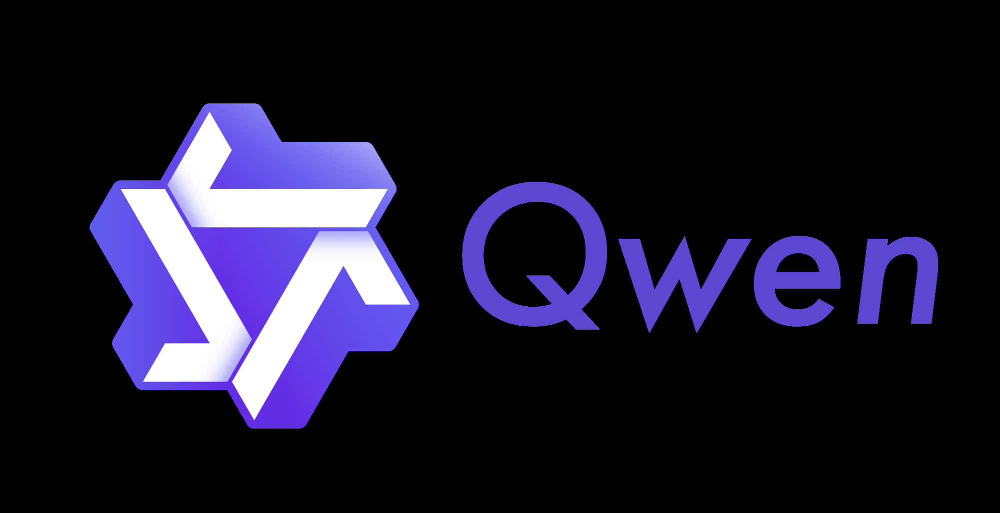
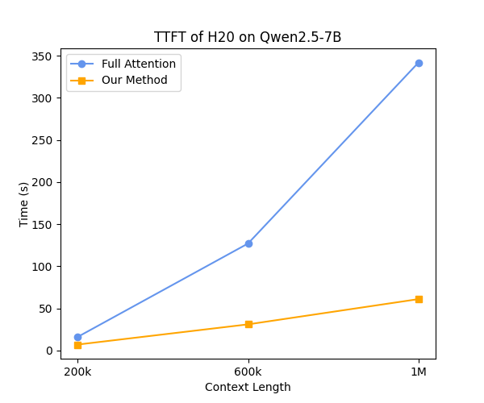
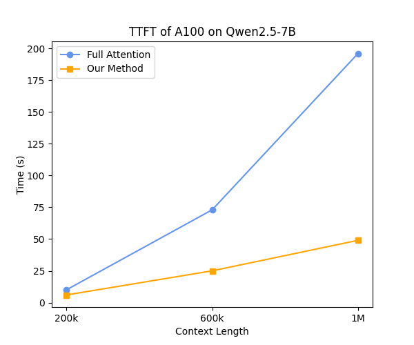
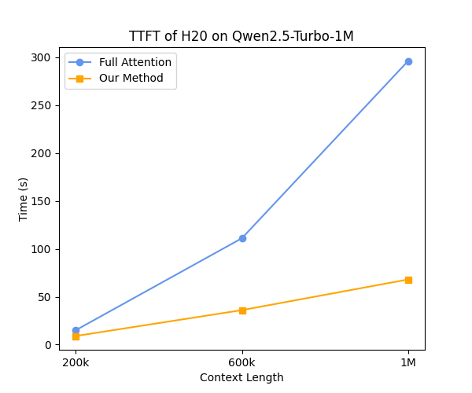
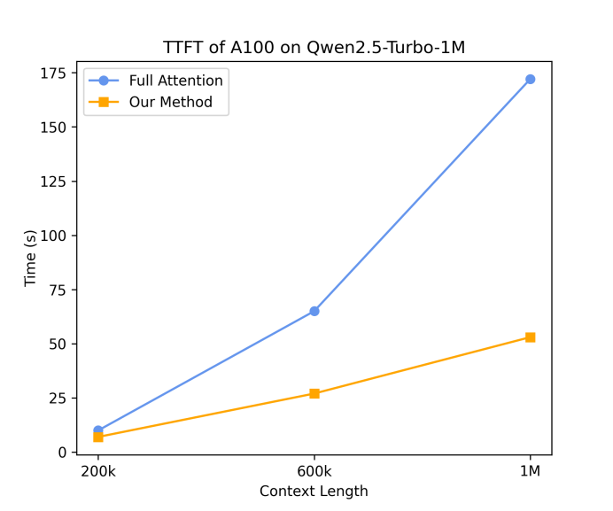

2025-01-06
① 一句话总结:Qwen2.5 是阿里开源的稠密 + MoE 全家桶(0.5B / 1.5B / 3B / 7B / 14B / 32B / 72B 稠密 + Turbo / Plus 两个 MoE),在 18T tokens 上做预训练,通过 分阶段课程式 long-context 扩展(到 1M)、百万级 SFT + Offline DPO + Online GRPO 的 post-training 配方,让 72B-Instruct 在多数 benchmark 上追平 Llama-3-405B-Instruct,Turbo/Plus 对标 GPT-4o-mini / GPT-4o。
② 面试考点:
- 架构变种:稠密模型沿用 Transformer decoder +
GQA(Q/KV 不对称,7B 起 28/4、14B/32B 是 40/8、72B 是 64/8)+SwiGLU+RoPE+ QKV bias + RMSNorm 前置;小模型(0.5B/1.5B/3B)开启 tied embeddings 以省参;MoE 用 fine-grained expert segmentation + shared experts(继承自 Qwen1.5-MoE / DeepSeek)。 - 预训练数据 18T:用 Qwen2-Instruct 当 quality classifier 打分过滤 + Qwen2.5-Math/Coder 注入 + Qwen2-72B-Instruct 合成数据 + 按 domain 平衡(下采样电商/社交/娱乐,上采样科技/学术);Hyper-param 用 scaling law 预测 batch size $B_{\text{opt}}$ 与学习率 $\mu_{\text{opt}}$。
- Long-context 配方:预训练两阶段(4K → 32K),RoPE base 由 ABF 抬到 1M;Turbo 渐进式 32K→64K→128K→256K(每阶段 40% 长 + 60% 短);推理时叠
YARN(NTK-aware 插值 $\theta_i = b^{-2i/d}$)+DCA(Dual Chunk Attention,把超长 attention 分块)→ 7B/14B/32B/72B 到 128K,Turbo 到 1M,实现 4× 外推。 - Post-training pipeline:
SFT(1M+ 样本,2 epoch,32K 长度,lr $7\times10^{-6}\to 7\times10^{-7}$,wd 0.1)→Offline DPO(150K pair,Online Merging Optimizer,lr $7\times10^{-7}$,专攻 math/code/IF/逻辑这类有 ground truth 的任务)→Online GRPO(reward model 评分,query 按 reward 方差排序,每 query 采 8 个 response,2048 global batch)。 - SFT 9 大数据维度:Long-response(8K 输出)/ Math(Qwen2.5-Math CoT + rejection sampling)/ Code(40 种语言 + sandbox 单元测试)/ Instruction-following(LLM 生成验证代码 + execution feedback)/ Structured data / Logical reasoning(70K 多种推理范式)/ Cross-lingual transfer / Robust system prompt / Response filtering(critic + multi-agent 评分)。
- Long-context SFT 二段式:第一段只用 ≤32K 短指令(与其他 Qwen2.5 同步),第二段混入 ≤256K 长指令;RL 阶段只用短指令——因为长 context RL 太贵且缺好的 reward model,但实验发现短 RL 也能迁移到长 context 偏好。
- 实证结论:Qwen2.5-72B-Base 用 ⅕ 的参数追平 Llama-3-405B-Base;72B-Instruct 在 MMLU-redux/MATH/MBPP/MultiPL-E/LiveCodeBench/Arena-Hard/MTBench 上反超 Llama-3.1-405B-Instruct;Turbo 在 1M passkey retrieval 上 100% 准确,基于 Minference 稀疏 attention 把 1M token TTFT 提速 3.2–4.3×。
- Reward model 反直觉发现:RM benchmark 分数高 ≠ 下游 RL 模型好(Goodhart's law),提醒不要 over-optimize 单一 RM bench。
🖼 图表速览 (7 张) · 点击放大

① 图说明:原文 Figure 1 的一部分(像素化 logo / 装饰元素),围绕"Qwen 系列迭代中 data scaling 起关键作用"的主旨展开——配文给出 3T → 7T → 18T 的数据扩展轨迹与 Qwen1.5-72B / Qwen2-72B / Qwen2.5-72B 在 MMLU / BBH / MBPP / MATH 上的递进。
② 关键数据:预训练 token 数从 Qwen2 的 7T 翻到 Qwen2.5 的 18T,且 mixture 经 Qwen2-Instruct 重新分类平衡;领域知识(MMLU 类)、数学、代码三个维度同步突破。
③ 启示:"scale × mixture" 双轮驱动——单纯堆 token 不够,必须配合 quality classifier 的精细化筛选与上/下采样,才能把同代 72B 的能力推到下一代水平。这也是 Qwen2.5 与 Llama-3 走相同范式的核心:数据治理优先于结构变更。
① 图说明:Qwen 品牌 logo(立体折叠几何造型),装饰性元素,不含统计数据。
② 信息层:本论文是"Qwen 团队"署名的技术报告(Alibaba),Qwen2.5 是 Qwen 系列第三代旗舰(Qwen → Qwen1.5 → Qwen2 → Qwen2.5)。
③ 启示:看到 logo 即意味这是阿里达摩院/通义实验室的官方版本,模型权重在 Hugging Face / ModelScope / Kaggle 三地同步;0.5B–14B 大部分采用 Apache 2.0,3B 与 72B 采用 Qwen Research / Qwen 自有许可。

① 图说明:Qwen 品牌 logo 与 wordmark 横向版,装饰用。
② 信息层:对应正文中"Qwen2.5 全家桶"——开源 7 档稠密(0.5B/1.5B/3B/7B/14B/32B/72B)+ 闭源 2 个 MoE(Turbo / Plus),累计在 HF Hub 上超过 100 个变体(含量化版)。
③ 启示:Qwen2.5 的"configuration richness"是其工程优势:从边缘端 0.5B 到云端 Plus,可一套接口横跨"端 → 端云协同 → 高吞吐 API"。Turbo / Plus 通过 scaling law 调出"与 72B / 14B 持平的激活参数"。

① 图说明:Figure 3 子图(H20 GPU 上 Qwen2.5-7B 的 TTFT 对比):蓝线 = Full Attention,黄线 = Our Method(基于 Minference 的稀疏 attention);横轴 200k/600k/1M context,纵轴秒数。
② 关键数据:1M token 时 Full Attention ≈ 340s,Our Method ≈ 60s,提速约 5.6×;600k 时 ≈ 4.1× ;200k 时 ≈ 2.3×。
③ 启示:$O(n^2)$ attention 的开销在 1M 已经是 user-perceivable 等级(分钟级 TTFT),稀疏化(动态选择 token 簇 + 块对角 + vertical/slash pattern)能把 prefill 拉回到秒级——这是 1M 长文产品化的必要工程前提。注意这只优化首 token,decode 仍受 KV cache 大小约束。

① 图说明:Figure 3 子图(A100 GPU 上 Qwen2.5-7B 的 TTFT 对比),与 fig_6 同构,只是换硬件。
② 关键数据:1M 时 Full Attention ≈ 195s,Our Method ≈ 50s,加速约 4.0×;600k ≈ 2.9× ;200k ≈ 1.7×。A100 因带宽与算力都比 H20 强,绝对延迟更低但加速比也略低。
③ 启示:稀疏 attention 的"加速比"在算力充裕的卡上会自然回落——因为基线 Full Attention 本身就已经被 FlashAttention 之类 kernel 打到接近 roofline,而稀疏方案的固定调度开销更显著。但绝对值仍把 1M prefill 压到亚分钟,工程上完全可用。

① 图说明:Figure 3 子图(H20 GPU 上 Qwen2.5-Turbo-1M 的 TTFT 对比),MoE 模型在长 context 上的表现。
② 关键数据:1M 时 Full ≈ 295s,Our ≈ 70s,提速约 4.3×;600k ≈ 3.1× ;200k ≈ 1.7×。MoE 因激活参数少,Full Attention 的绝对 prefill 比 7B 稠密略低,但稀疏化收益类似。
③ 启示:MoE + 稀疏 attention 是阿里在 long-context 商用 API 上的组合拳:激活参数控制 decode 成本,稀疏 attention 控制 prefill 成本——这也是 Qwen2.5-Turbo 能以低于 Qwen2.5-14B 的费用对外卖 1M context 的关键。

① 图说明:Figure 3 子图(A100 GPU 上 Qwen2.5-Turbo-1M 的 TTFT 对比)。
② 关键数据:1M 时 Full ≈ 172s,Our ≈ 52s,加速约 3.2×;600k ≈ 2.4× ;200k ≈ 1.4×。是四张 TTFT 子图里加速比最低的一张——A100 带宽对 dense kernel 友好,稀疏方案 overhead 相对突出。
③ 启示:四张 TTFT 图(fig_6–fig_9)合起来佐证论文宣称的"3.2–4.3× 加速区间";真实生产部署要根据 GPU 型号与 batch size 重新 profile,稀疏 attention 的收益不是常数,而是随显存带宽 / 计算密度滑动。结论上,长 context 推理优化是 architecture / algorithm / kernel 三层耦合的系统工程,不是单点替换。
📖 论文正文(英文,按章节折叠)
Preamblep.1
2025-01-06 Qwen2.5 Technical Report Qwen Team https://huggingface.co/Qwen https://modelscope.cn/organization/qwen https://github.com/QwenLM/Qwen2.5
Abstract · 摘要p.1
In this report, we introduce Qwen2.5, a comprehensive series of large language models (LLMs) designed to meet diverse needs. Compared to previous iterations, Qwen 2.5 has been significantly improved during both the pre-training and post-training stages. In terms of pre-training, we have scaled the high-quality pre-training datasets from the previous 7 trillion tokens to 18 trillion tokens. This provides a strong foundation for common sense, expert knowledge, and reasoning capabilities. In terms of post-training, we implement intricate supervised finetuning with over 1 million samples, as well as multistage reinforcement learning, including offline learning DPO and online learning GRPO. Post-training techniques significantly enhance human preference, and notably improve long text generation, structural data analysis, and instruction following.
在本报告中,我们介绍 Qwen2.5——一个面向多样化需求而设计的、综合性的大型语言模型(LLM)系列。相较于之前的迭代版本,Qwen2.5 在预训练与后训练两个阶段都得到了显著改进。在预训练方面,我们已经把高质量的预训练数据集从此前的 7 万亿 token 扩展到了 18 万亿 token,这为常识、专业知识与推理能力提供了一个坚实的基础。在后训练方面,我们实施了包含超过 100 万样本的精细化监督微调,以及多阶段的强化学习——包括 offline 阶段的 DPO 与 online 阶段的 GRPO。后训练技术显著增强了对人类偏好的对齐,并且尤其改善了长文本生成、结构化数据分析与指令跟随能力。
To handle diverse and varied use cases effectively, we present Qwen2.5 LLM series in rich configurations. The open-weight offerings include base models and instruction-tuned models in sizes of 0.5B, 1.5B, 3B, 7B, 14B, 32B, and 72B parameters. Quantized versions of the instruction-tuned models are also provided. Over 100 models can be accessed from Hugging Face Hub, ModelScope, and Kaggle. In addition, for hosted solutions, the proprietary models currently include two mixture-of-experts (MoE) variants: Qwen2.5-Turbo and Qwen2.5-Plus, both available from Alibaba Cloud Model Studio.
为有效应对多种多样的应用场景,我们以丰富的配置形式发布 Qwen2.5 LLM 系列。开源权重的发布包含尺寸为 0.5B、1.5B、3B、7B、14B、32B 与 72B 的 base 模型与 instruct(指令微调)模型;并同时提供 instruct 模型的量化版本。Hugging Face Hub、ModelScope 与 Kaggle 上累计可访问超过 100 个模型。此外,在托管服务方面,我们当前的闭源模型包含两个混合专家(MoE)变体:Qwen2.5-Turbo 与 Qwen2.5-Plus,二者均通过阿里云 Model Studio 对外提供。
Qwen2.5 has demonstrated top-tier performance on a wide range of benchmarks evaluating language understanding, reasoning, mathematics, coding, human preference alignment, etc. Specifically, the open-weight flagship Qwen2.5-72B-Instruct outperforms a number of open and proprietary models and demonstrates competitive performance to the state-of-the-art open-weight model, Llama-3-405B-Instruct, which is around 5 times larger. Qwen2.5-Turbo and Qwen2.5-Plus offer superior cost-effectiveness while performing competitively against GPT-4o-mini and GPT-4o respectively. Additionally, as the foundation, Qwen2.5 models have been instrumental in training specialized models such as Qwen2.5-Math, Qwen2.5-Coder, QwQ, and multimodal models.
Qwen2.5 在一系列涵盖语言理解、推理、数学、代码与人类偏好对齐等维度的 benchmark 上展现出顶级的表现。具体而言,开源旗舰 Qwen2.5-72B-Instruct 不仅超越了一批开源与闭源模型,而且与体量约为其 5 倍的 SOTA 开源模型 Llama-3-405B-Instruct 表现持平。Qwen2.5-Turbo 与 Qwen2.5-Plus 则在与 GPT-4o-mini、GPT-4o 不相上下的性能下,提供了更优的性价比。此外,作为基座,Qwen2.5 系列也在 Qwen2.5-Math、Qwen2.5-Coder、QwQ 以及多模态模型等专门化模型的训练中扮演了关键角色。
§1 Introduction / 引言p.2
The sparks of artificial general intelligence (AGI) are increasingly visible through the fast development of large foundation models, notably large language models (LLMs). The continuous advancement in model and data scaling, combined with the paradigm of large-scale pre-training followed by high-quality supervised fine-tuning (SFT) and reinforcement learning from human feedback (RLHF), has enabled large language models (LLMs) to develop emergent capabilities in language understanding, generation, and reasoning. Building on this foundation, recent breakthroughs in inference time scaling, particularly demonstrated by o1, have enhanced LLMs' capacity for deep thinking through step-by-step reasoning and reflection. These developments have elevated the potential of language models, suggesting they may achieve significant breakthroughs in scientific exploration as they continue to demonstrate emergent capabilities indicative of more general artificial intelligence.
通过大型基础模型——尤其是大型语言模型(LLM)的快速发展,通用人工智能(AGI)的曙光已经愈发清晰可见。模型与数据 scaling 的持续推进,加之"大规模预训练 + 高质量监督微调(SFT)+ 基于人类反馈的强化学习(RLHF)"这一范式,共同促成了大型语言模型在语言理解、生成与推理上的涌现能力。在此基础上,最近 inference-time scaling 上的突破——尤其是由 o1 所展示的——通过"逐步推理 + 反思"进一步增强了 LLM 的深度思考能力。这些进展提升了语言模型的潜力,预示着它们在持续展现出指向更通用人工智能的涌现能力的同时,可能在科学探索方面取得显著突破。
Besides the fast development of model capabilities, the recent two years have witnessed a burst of open (open-weight) large language models in the LLM community, for example, the Llama series, Mistral series, and our Qwen series. The open-weight models have democratized the access of large language models to common users and developers, enabling broader research participation, fostering innovation through community collaboration, and accelerating the development of AI applications across diverse domains.
除了模型能力的快速发展之外,过去两年也见证了 LLM 社区中开放权重(open-weight)大型语言模型的爆发——例如 Llama 系列、Mistral 系列以及我们的 Qwen 系列。开放权重模型让普通用户与开发者也能平等地访问到大型语言模型,既扩大了研究参与的范围,也通过社区协作激励了创新,并加速了 AI 应用在多个领域的开发。
Recently, we release the details of our latest version of the Qwen series, Qwen2.5. In terms of the open-weight part, we release pre-trained and instruction-tuned models of 7 sizes, including 0.5B, 1.5B, 3B, 7B, 14B, 32B, and 72B, and we provide not only the original models in bfloat16 precision but also the quantized models in different precisions. Specifically, the flagship model Qwen2.5-72B-Instruct demonstrates competitive performance against the state-of-the-art open-weight model, Llama-3-405B-Instruct, which is around 5 times larger. Additionally, we also release the proprietary models of Mixture-of-Experts (MoE), namely Qwen2.5-Turbo and Qwen2.5-Plus, which performs competitively against GPT-4o-mini and GPT-4o respectively.
最近我们发布了 Qwen 系列的最新版本——Qwen2.5——的详细信息。在开源权重部分,我们发布了 7 种尺寸的预训练与指令微调模型,包括 0.5B、1.5B、3B、7B、14B、32B 与 72B;并且不仅提供 bfloat16 精度的原始模型,也提供不同精度的量化模型。具体而言,旗舰模型 Qwen2.5-72B-Instruct 与体量约为其 5 倍的 SOTA 开源模型 Llama-3-405B-Instruct 表现接近。此外,我们也发布了闭源的混合专家(MoE)模型——即 Qwen2.5-Turbo 与 Qwen2.5-Plus,它们分别与 GPT-4o-mini、GPT-4o 表现相当。
In this technical report, we introduce Qwen2.5, the result of our continuous endeavor to create better LLMs. Below, we show the key features of the latest version of Qwen: Better in Size: Compared with Qwen2, in addition to 0.5B, 1.5B, 7B, and 72B models, Qwen2.5 brings back the 3B, 14B, and 32B models, which are more cost-effective for resource-limited scenarios and are under-represented in the current field of open foundation models. Qwen2.5-Turbo and Qwen2.5-Plus offer a great balance among accuracy, latency, and cost. Better in Data: The pre-training and post-training data have been improved significantly. The pre-training data increased from 7 trillion tokens to 18 trillion tokens, with focus on knowledge, coding, and mathematics. The pre-training is staged to allow transitions among different mixtures. The post-training data amounts to 1 million examples, across the stage of supervised finetuning (SFT), direct preference optimization (DPO), and group relative policy optimization (GRPO). Better in Use: Several key limitations of Qwen2 in use have been eliminated, including larger generation length (from 2K tokens to 8K tokens), better support for structured input and output (e.g., tables and JSON), and easier tool use. In addition, Qwen2.5-Turbo supports a context length of up to 1 million tokens.
在本技术报告中,我们介绍 Qwen2.5——这是我们不断打造更好 LLM 的努力的成果。下面我们列出最新版本 Qwen 的关键特征:
- Better in Size(更全的尺寸):相较于 Qwen2,除 0.5B、1.5B、7B、72B 之外,Qwen2.5 把 3B、14B、32B 几档"找回来"——这几档对资源受限场景更具性价比,且在当前的开源基础模型中代表性不足。Qwen2.5-Turbo 与 Qwen2.5-Plus 在准确率、延迟与成本之间取得了良好的平衡。
- Better in Data(更好的数据):预训练与后训练数据都得到了显著改进。预训练数据从 7 万亿 token 扩到 18 万亿 token,聚焦于知识、代码与数学;预训练采用分阶段策略以便在不同 mixture 之间过渡。后训练数据合计 100 万条样本,跨监督微调(SFT)、直接偏好优化(DPO)与组相对策略优化(GRPO)三个阶段。
- Better in Use(更好用):Qwen2 中若干关键的使用限制已被消除——包括更大的生成长度(从 2K token 增至 8K token)、对结构化输入输出(如表格、JSON)更好的支持、更便捷的工具使用。此外,Qwen2.5-Turbo 支持长达 100 万 token 的上下文。
§2 Architecture & Tokenizer / 架构与分词器p.2
Basically, the Qwen2.5 series include dense models for opensource, namely Qwen2.5-0.5B / 1.5B / 3B / 7B / 14B / 32B / 72B, and MoE models for API service, namely Qwen2.5-Turbo and Qwen2.5-Plus. For dense models, we maintain the Transformer-based decoder architecture as Qwen2. The architecture incorporates several key components: Grouped Query Attention (GQA) for efficient KV cache utilization, SwiGLU activation function for non-linear activation, Rotary Positional Embeddings (RoPE) for encoding position information, QKV bias in the attention mechanism and RMSNorm with pre-normalization to ensure stable training. Building upon the dense model architectures, we extend it to MoE model architectures. This is achieved by replacing standard feed-forward network (FFN) layers with specialized MoE layers, where each layer comprises multiple FFN experts and a routing mechanism that dispatches tokens to the top-K experts. Following the approaches demonstrated in Qwen1.5-MoE, we implement fine-grained expert segmentation and shared experts routing.
基本上,Qwen2.5 系列包含面向开源的稠密模型——即 Qwen2.5-0.5B / 1.5B / 3B / 7B / 14B / 32B / 72B,以及面向 API 服务的 MoE 模型——即 Qwen2.5-Turbo 与 Qwen2.5-Plus。对于稠密模型,我们沿用了与 Qwen2 相同的、基于 Transformer 的 decoder 架构,该架构集成了若干关键组件:用于高效利用 KV cache 的 GQA(Grouped Query Attention);用于非线性激活的 SwiGLU 激活函数;用于位置信息编码的 RoPE(Rotary Positional Embeddings);attention 机制中的 QKV bias;以及 带 pre-normalization 的 RMSNorm,以确保训练稳定。在稠密模型架构之上,我们将其扩展到 MoE 模型架构:具体做法是把标准的前馈网络(FFN)层替换为专门的 MoE 层——每层由多个 FFN 专家与一个把 token 派发给 top-K 专家的路由机制组成。沿用 Qwen1.5-MoE 中已经验证的做法,我们实现了 fine-grained expert segmentation(细粒度专家切分)与 shared experts routing(共享专家路由)。
Table 1 reports the architecture and licenses of the open-weight Qwen2.5 dense models. The 0.5B model uses 24 layers, 14/2 Q/KV heads, tie-embedding enabled, 32K context / 8K generation length, under Apache 2.0; the 1.5B uses 28 layers, 12/2 heads, tie-embedding enabled, 32K/8K, Apache 2.0; the 3B uses 36 layers, 16/2 heads, tie-embedding enabled, 32K/8K, under Qwen Research; the 7B uses 28 layers, 28/4 heads, tie-embedding disabled, 128K/8K, Apache 2.0; the 14B uses 48 layers, 40/8 heads, tie-embedding disabled, 128K/8K, Apache 2.0; the 32B uses 64 layers, 40/8 heads, tie-embedding disabled, 128K/8K, Apache 2.0; the 72B uses 80 layers, 64/8 heads, tie-embedding disabled, 128K/8K, under the Qwen license.
表 1 给出开源 Qwen2.5 稠密模型的架构与许可证。0.5B:24 层、14/2 的 Q/KV 头数、启用 tie-embedding、32K 上下文 / 8K 生成长度、Apache 2.0;1.5B:28 层、12/2、启用 tie-embedding、32K/8K、Apache 2.0;3B:36 层、16/2、启用 tie-embedding、32K/8K、Qwen Research 许可证;7B:28 层、28/4、不启用 tie-embedding、128K/8K、Apache 2.0;14B:48 层、40/8、不启用 tie-embedding、128K/8K、Apache 2.0;32B:64 层、40/8、不启用 tie-embedding、128K/8K、Apache 2.0;72B:80 层、64/8、不启用 tie-embedding、128K/8K、Qwen 许可证。规律:小尺寸模型开启 tied embedding(因 embedding 在小模型中占参数比重大,绑权可省参亦能防过拟合);从 7B 起 untie 以让 lm_head 独立学习。
For tokenization, we utilize Qwen's tokenizer, which implements byte-level byte-pair encoding (BBPE) with a vocabulary of 151,643 regular tokens. We have expanded the set of control tokens from 3 to 22 compared to previous Qwen versions, adding two new tokens for tool functionality and allocating the remainder for other model capabilities. This expansion establishes a unified vocabulary across all Qwen2.5 models, enhancing consistency and reducing potential compatibility issues.
在分词方面,我们使用 Qwen 的分词器——它实现了字节级字节对编码(BBPE,byte-level byte-pair encoding),普通 token 词表大小为 151,643。相较于此前的 Qwen 版本,我们把控制 token 的集合从 3 个扩展到了 22 个——其中新增了 2 个用于 tool 功能的 token,剩余则分配给其他模型能力。这一扩展在所有 Qwen2.5 模型之间建立起统一词表,增强了一致性,并降低了潜在的兼容性问题。
§3 Pre-training / 预训练(数据 / 超参 / Long-context)p.3
Qwen2.5 demonstrates significant enhancements in pre-training data quality compared to its predecessor Qwen2. These improvements stem from several key aspects. (1) Better data filtering. High-quality pre-training data is crucial for model performance, making data quality assessment and filtering a critical component of our pipeline. We leverage Qwen2-Instruct models as data quality filters that perform comprehensive, multi-dimensional analysis to evaluate and score training samples. The filtering method represents a significant advancement over our previous approach used for Qwen2, as it benefits from Qwen2's expanded pre-training on a larger multilingual corpus. The enhanced capabilities enable more nuanced quality assessment, resulting in both improved retention of high-quality training data and more effective filtering of low-quality samples across multiple languages.
相较于其前身 Qwen2,Qwen2.5 在预训练数据质量上展现出显著提升。这些改进来自如下几个关键方面。(1)更强的数据过滤:高质量的预训练数据对模型性能至关重要,这使得数据质量评估与过滤成为我们 pipeline 中的关键组件。我们把 Qwen2-Instruct 模型作为数据质量过滤器,对训练样本进行全面、多维度的分析以评估和打分。这种过滤方法相比我们此前在 Qwen2 上的做法是一次显著的提升——因为它受益于 Qwen2 在一个更大的多语言语料上的扩展预训练。这种增强的能力支持更精细的质量评估,既改善了对高质量训练数据的保留,也更有效地在多种语言上过滤掉低质量样本。
(2) Better math and code data. During the pre-training phase of Qwen2.5, we incorporate training data from Qwen2.5-Math and Qwen2.5-Coder. This data integration strategy proves highly effective, as these specialized datasets are instrumental in achieving state-of-the-art performance on mathematical and coding tasks. By leveraging these high-quality domain-specific datasets during pre-training, Qwen2.5 inherits strong capabilities in both mathematical reasoning and code generation. (3) Better synthetic data. To generate high-quality synthetic data, particularly in mathematics, code, and knowledge domains, we leverage both Qwen2-72B-Instruct and Qwen2-Math-72B-Instruct. The quality of this synthesized data is further enhanced through rigorous filtering using our proprietary general reward model and the specialized Qwen2-Math-RM-72B model.
(2)更好的数学与代码数据:在 Qwen2.5 的预训练阶段,我们引入了来自 Qwen2.5-Math 与 Qwen2.5-Coder 的训练数据。这种数据整合策略证明非常有效——这些专门化数据集对在数学与代码任务上取得 SOTA 表现起到了关键作用。通过在预训练中利用这些高质量、领域专门化的数据集,Qwen2.5 在数学推理与代码生成两方面都继承到了强大的能力。(3)更好的合成数据:为了生成高质量的合成数据,尤其是在数学、代码、知识三个领域,我们同时利用了 Qwen2-72B-Instruct 与 Qwen2-Math-72B-Instruct。这些合成数据的质量再通过我们自研的通用奖励模型与专门化的 Qwen2-Math-RM-72B 模型进行严格过滤而进一步提升。
(4) Better data mixture. To optimize the pre-training data distribution, we employ Qwen2-Instruct models to classify and balance content across different domains. Our analysis revealed that domains like e-commerce, social media, and entertainment are significantly overrepresented in web-scale data, often containing repetitive, template-based, or machine-generated content. Conversely, domains such as technology, science, and academic research, while containing higher-quality information, are traditionally underrepresented. Through strategic down-sampling of overrepresented domains and up-sampling of high-value domains, we ensure a more balanced and information-rich training dataset that better serves our model's learning objectives. Building on these techniques, we have developed a larger and higher-quality pre-training dataset, expanding from the 7 trillion tokens used in Qwen2 to 18 trillion tokens.
(4)更好的数据 mixture:为优化预训练数据分布,我们使用 Qwen2-Instruct 模型对不同领域的内容进行分类与平衡。我们的分析表明:电商、社交媒体、娱乐等领域在网络规模的数据中被严重过度代表,这些内容常常是重复的、模板化的或机器生成的;反过来,科技、科学、学术研究等领域虽然包含更高质量的信息,但在历史上代表性不足。通过对过度代表的领域做策略性下采样、对高价值领域做上采样,我们确保了一个更平衡、更具信息密度的训练数据集,从而更好地服务于模型的学习目标。基于这些技术,我们构建出了一个更大、更高质量的预训练数据集——从 Qwen2 所使用的 7 万亿 token 扩展到了 18 万亿 token。
We develop scaling laws for hyper-parameter based on the pre-training data of Qwen2.5. While previous studies primarily used scaling laws to determine optimal model sizes given compute budgets, we leverage them to identify optimal hyperparameters across model architectures. Specifically, our scaling laws help determine key training parameters like batch size $B$ and learning rate $\mu$ for both dense models and MoE models of varying sizes. Through extensive experimentation, we systematically study the relationship between model architecture and optimal training hyper-parameters. Specifically, we analyze how the optimal learning rate $\mu_\text{opt}$ and batch size $B_\text{opt}$ vary with model size $N$ and pre-training data size $D$. Our experiments cover a comprehensive range of architectures, including dense models with 44M to 14B parameters and MoE models with 44M to 1B activated parameters, trained on datasets ranging from 0.8B to 600B tokens. Using these optimal hyper-parameter predictions, we then model the final loss as a function of model architecture and training data scale.
我们基于 Qwen2.5 的预训练数据为超参开发了 scaling law。先前的研究主要用 scaling law 在给定算力预算下确定最优的模型尺寸,而我们则利用它来跨模型架构识别最优的超参。具体而言,我们的 scaling law 帮助确定关键训练参数,如不同尺寸的稠密模型与 MoE 模型的 batch size $B$ 与学习率 $\mu$。通过大量实验,我们系统地研究了模型架构与最优训练超参之间的关系。具体而言,我们分析最优学习率 $\mu_\text{opt}$ 与 batch size $B_\text{opt}$ 如何随模型大小 $N$ 与预训练数据大小 $D$ 的变化而变化。我们的实验覆盖了一个全面的架构范围——包括 44M 到 14B 参数的稠密模型与 44M 到 1B 激活参数的 MoE 模型,训练数据规模从 0.8B 到 600B token。基于这些最优超参的预测,我们进一步将最终 loss 建模为模型架构与训练数据规模的函数。
Additionally, we leverage scaling laws to predict and compare the performance of MoE models with varying parameter counts against their dense counterparts. This analysis guides our hyper-parameter configuration for MoE models, enabling us to achieve performance parity with specific dense model variants (such as Qwen2.5-72B and Qwen2.5-14B) through careful tuning of both activated and total parameters.
此外,我们利用 scaling law 预测并比较了不同参数量的 MoE 模型与其稠密对手的表现。这一分析指导着我们对 MoE 模型的超参配置——通过对激活参数与总参数的仔细调优,使我们能与某些特定的稠密模型变体(例如 Qwen2.5-72B 与 Qwen2.5-14B)在性能上达到对位。
For optimal training efficiency, Qwen2.5 employs a two-phase pre-training approach: an initial phase with a 4,096-token context length, followed by an extension phase for longer sequences. Following the strategy used in Qwen2, we extend the context length from 4,096 to 32,768 tokens during the final pre-training stage for all model variants except Qwen2.5-Turbo. Concurrently, we increase the base frequency of RoPE from 10,000 to 1,000,000 using the ABF technique. The RoPE rotation angles per dimension can be written as $\theta_i = b^{-2i/d}$, where the base $b$ has been adjusted up from $10^4$ to $10^6$ — yielding lower frequencies and a longer effective receptive field.
为获得最优的训练效率,Qwen2.5 采用一种两阶段的预训练方法:初始阶段使用 4,096-token 的上下文长度,随后是一个面向更长序列的扩展阶段。沿用 Qwen2 中的策略,我们在最终预训练阶段把上下文长度从 4,096 扩展到 32,768 token——除 Qwen2.5-Turbo 之外的所有模型变体都如此。同时,我们使用 ABF 技术把 RoPE 的 base 频率从 10,000 抬到 1,000,000。RoPE 每个维度的旋转角可以写作 $\theta_i = b^{-2i/d}$,其中 base $b$ 已经从 $10^4$ 调高到 $10^6$——这会得到更低的频率与更长的有效感受野。
For Qwen2.5-Turbo, we implement a progressive context length expansion strategy during training, advancing through four stages: 32,768 tokens, 65,536 tokens, 131,072 tokens, and ultimately 262,144 tokens, with a RoPE base frequency of 10,000,000. At each stage, we carefully curate the training data to include 40% sequences at the current maximum length and 60% shorter sequences. This progressive training methodology enables smooth adaptation to increasing context lengths while maintaining the model's ability to effectively process and generalize across sequences of varying lengths.
对于 Qwen2.5-Turbo,我们在训练中实现了一种渐进式的上下文长度扩展策略,经历四个阶段:32,768 token、65,536 token、131,072 token,最终到达 262,144 token,RoPE 的 base 频率为 10,000,000。每个阶段我们都精心整理训练数据——使其包含 40% 当前最大长度的序列与 60% 较短的序列。这种渐进式训练方法使得模型能平滑地适应不断增加的上下文长度,同时保留对不同长度序列高效处理与泛化的能力。
To enhance our models' ability to process longer sequences during inference, we implement two key strategies: YARN and Dual Chunk Attention (DCA). Through these innovations, we achieve a four-fold increase in sequence length capacity, enabling Qwen2.5-Turbo to handle up to 1 million tokens and other models to process up to 131,072 tokens. Notably, these approaches not only improve the modeling of long sequences by reducing perplexity but also maintain the models' strong performance on shorter sequences, ensuring consistent quality across varying input lengths. Intuitively, YARN performs per-frequency NTK-aware interpolation on RoPE — scaling low-frequency components while leaving high-frequency ones intact — and DCA partitions the extra-long sequence into chunks, re-mapping inter-chunk relative positions so that every position index falls within the training distribution.
为增强模型在推理时处理更长序列的能力,我们实现了两项关键策略:YARN 与 DCA(Dual Chunk Attention)。通过这些创新,我们实现了序列长度容量的 4 倍提升,使 Qwen2.5-Turbo 能处理多达 100 万 token、其它模型能处理多达 131,072 token。值得注意的是,这些方法不仅通过降低长序列上的 perplexity 改进了对长序列的建模,也保持了模型在较短序列上的强表现——确保跨不同输入长度下质量一致。直观上,YARN 对 RoPE 做按频段的 NTK-aware 插值——对低频分量做缩放,而高频分量保持不变;而 DCA 把超长序列切分成块,对块间的相对位置进行重映射,使每一个位置 index 都落在训练时的分布之内。
§4 Post-training / 后训练(SFT + Offline DPO + Online GRPO + Long-context FT)p.4
Qwen 2.5 introduces two significant advancements in its post-training design compared to Qwen 2: (1) Expanded Supervised Fine-tuning Data Coverage: The supervised fine-tuning process leverages a massive dataset comprising millions of high-quality examples. This expansion specifically addresses key areas where the previous model showed limitations, such as long-sequence generation, mathematical problem-solving, coding, instruction-following, structured data understanding, logical reasoning, cross-lingual transfer, and robust system instruction. (2) Two-stage Reinforcement Learning: The reinforcement learning (RL) process in Qwen 2.5 is divided into two distinct stages: Offline RL and Online RL.
相较于 Qwen 2,Qwen 2.5 在后训练设计上引入了两项重大改进:(1)扩展的监督微调数据覆盖面——监督微调过程利用了一个由数百万高质量样本组成的庞大数据集;这一扩展专门针对前一代模型暴露出的若干关键短板,例如长序列生成、数学解题、代码、指令跟随、结构化数据理解、逻辑推理、跨语言迁移以及鲁棒的 system instruction(系统指令)。(2)两阶段的强化学习——Qwen 2.5 中的强化学习(RL)过程被划分为两个截然不同的阶段:Offline RL 与 Online RL。
Offline RL: This stage focuses on developing capabilities that are challenging for the reward model to evaluate, such as reasoning, factuality, and instruction-following. Through meticulous construction and validation of training data, we ensure that the Offline RL signals are both learnable and reliable, enabling the model to acquire those complex skills effectively. Online RL: The Online RL phase leverages the reward model's ability to detect nuances in output quality, including truthfulness, helpfulness, conciseness, relevance, harmlessness and debiasing. It enables the model to generate responses that are precise, coherent, and well-structured while maintaining safety and readability. As a result, the model's outputs consistently meet human quality standards and expectations.
Offline RL:这一阶段专注于发展那些"对 reward model 来说难以评估"的能力——例如推理、事实性与指令跟随。通过对训练数据的精细构建与验证,我们确保 Offline RL 的信号既可学习也可靠,使模型能有效习得这些复杂技能。Online RL:Online RL 阶段则利用 reward model 检测输出质量细微差异的能力——包括真实性(truthfulness)、有用性(helpfulness)、简洁性(conciseness)、相关性(relevance)、无害性(harmlessness)与去偏(debiasing)。它使模型在保持安全性与可读性的同时,能够生成精确、连贯且结构良好的回答。其结果是模型的输出能够稳定地达到人类的质量标准与预期。
In this section, we detail the key enhancements made during the SFT phase of Qwen2.5, focusing on several critical areas. (1) Long-sequence Generation: Qwen2.5 is capable of generating high-quality content with an output context length of up to 8,192 tokens, a significant advancement over the typical post-training response length, which often remains under 2,000 tokens. To address this gap, we develop long-response datasets. We employ back-translation techniques to generate queries for long-text data from pre-training corpora, impose output length constraints, and use Qwen2 to filter out low-quality paired data. (2) Mathematics: We introduce the chain-of-thought data of Qwen2.5-Math, which encompasses a diverse range of query sources, including public datasets, K-12 problem collections, and synthetic problems. To ensure high-quality reasoning, we employ rejection sampling along with reward modeling and annotated answers for guidance, producing step-by-step reasoning process.
在本节中,我们详细说明 Qwen2.5 在 SFT 阶段所做的关键增强,聚焦于若干关键领域。(1)长序列生成:Qwen2.5 能够生成长达 8,192 token 输出上下文长度的高质量内容——相较于通常停留在 2,000 token 以下的典型后训练响应长度,这是一次显著的进步。为弥补这一差距,我们构建了长响应数据集:采用 back-translation 技术从预训练语料生成针对长文本数据的 query,施加输出长度约束,并用 Qwen2 过滤掉低质的成对数据。(2)数学:我们引入 Qwen2.5-Math 的链式思维(CoT)数据,其 query 来源多样,包括公开数据集、K-12 题集与合成题目。为了确保推理质量高,我们使用 rejection sampling 配合奖励建模与人工标注答案进行引导,从而生成逐步的推理过程。
(3) Coding: To enhance coding capabilities, we incorporate the instruction tuning data of Qwen2.5-Coder. We use multiple language-specific agents into a collaborative framework, generating diverse and high-quality instruction pairs across nearly 40 programming languages. We expand our instruction dataset by synthesizing new examples from code-related Q&A websites and gathering algorithmic code snippets from GitHub. A comprehensive multilingual sandbox is used to perform static code checking and validate code snippets through automated unit testing, ensuring code quality and correctness. (4) Instruction-following: To ensure high-quality instruction-following data, we implement a rigorous code-based validation framework. In this approach, LLMs generate both instructions and corresponding verification code, along with comprehensive unit tests for cross-validation. Through execution feedback-based rejection sampling, we carefully curate the training data used for Supervised Fine-Tuning, thereby guaranteeing the model's faithful adherence to intended instructions.
(3)代码:为增强代码能力,我们引入了 Qwen2.5-Coder 的指令微调数据。我们让多个面向特定语言的 agent 在一个协作框架下工作,在近 40 种编程语言上生成多样且高质量的指令对。我们还通过从代码相关问答网站合成新样例、并从 GitHub 收集算法代码片段,扩充指令数据集。一个全面的多语言 sandbox 被用来执行静态代码检查并通过自动单元测试验证代码片段,以确保代码质量与正确性。(4)指令跟随:为确保指令跟随数据的高质量,我们实现了一个严格的基于代码的验证框架——在该方法中,LLM 既生成指令本身、也生成相应的验证代码以及用于交叉验证的全面单元测试。通过基于执行反馈(execution feedback)的 rejection sampling,我们仔细整理出用于监督微调的训练数据,从而保证模型对预期指令的忠实遵循。
(5) Structured Data Understanding: We develop a comprehensive structured understanding dataset that encompasses both traditional tasks, such as tabular question-answering, fact verification, error correction, and structural understanding, as well as complex tasks involving structured and semi-structured data. By incorporating reasoning chains into the model's responses, we significantly enhance its ability to infer information from structured data. (6) Logical Reasoning: To enhance the model's logical reasoning capabilities, we introduce a diverse set of 70,000 new queries spanning various domains. These queries encompass multiple-choice questions, true/false questions, and open-ended questions. The model is trained to approach problems systematically, employing a range of reasoning methods such as deductive reasoning, inductive generalization, analogical reasoning, causal reasoning, and statistical reasoning. Through iterative refinement, we systematically filter out data containing incorrect answers or flawed reasoning processes.
(5)结构化数据理解:我们构建了一个全面的结构化理解数据集——既覆盖表格问答、事实校验、纠错、结构理解等传统任务,也覆盖涉及结构化与半结构化数据的复杂任务。通过在模型响应中加入推理链,我们显著增强了模型从结构化数据中推断信息的能力。(6)逻辑推理:为增强模型的逻辑推理能力,我们引入了一组多样化、跨多个领域的 70,000 条新 query——既包含多选题,也包含判断题与开放式问题。模型被训练以系统化的方式应对问题,采用一系列推理方法,包括演绎推理、归纳概括、类比推理、因果推理与统计推理。通过迭代式打磨,我们系统地过滤掉那些答案错误或推理过程有缺陷的数据。
(7) Cross-Lingual Transfer: To facilitate the transfer of the model's general capabilities across languages, we employ a translation model to convert instructions from high-resource languages into various low-resource languages, thereby generating corresponding response candidates. To ensure the accuracy and consistency of these responses, we evaluate the semantic alignment between each multilingual response and its original counterpart. (8) Robust System Instruction: We construct hundreds of general system prompts to improve the diversity of system prompts in post-training, ensuring consistency between system prompts and conversations. (9) Response Filtering: To evaluate the quality of responses, we employ multiple automatic annotation methods, including a dedicated critic model and a multi-agent collaborative scoring system. Responses are subjected to rigorous assessment, and only those deem flawless by all scoring systems are retained. Ultimately, we construct a dataset of over 1 million SFT examples. The model is fine-tuned for two epochs with a sequence length of 32,768 tokens. The learning rate is gradually decreased from $7 \times 10^{-6}$ to $7 \times 10^{-7}$. To address overfitting, we apply a weight decay of 0.1, and gradient norms are clipped at a maximum value of 1.0.
(7)跨语言迁移:为促进模型的通用能力跨语言迁移,我们采用一个翻译模型把高资源语言的指令转换到多种低资源语言,从而生成对应的响应候选;为确保这些响应的准确性与一致性,我们评估每条多语言响应与原始版本之间的语义对齐程度。(8)鲁棒的 system instruction:我们构建了数百条通用 system prompt,以提升后训练中 system prompt 的多样性,并确保 system prompt 与对话之间的一致性。(9)响应过滤:为评估响应质量,我们采用多种自动标注方法——包括一个专门的 critic 模型与一个多 agent 协作的打分系统;响应须接受严格评估,只有被所有打分系统都判定为"无瑕"的响应才会被保留。最终,我们构建出一个超过 100 万 SFT 样本的数据集。模型以 32,768 token 的序列长度被微调 2 个 epoch;学习率从 $7 \times 10^{-6}$ 逐步衰减到 $7 \times 10^{-7}$;为应对过拟合,我们使用 0.1 的 weight decay,并把梯度范数裁剪到最大值 1.0。
Compared to Online Reinforcement Learning (RL), Offline RL enables the pre-preparation of training signals, which is particularly advantageous for tasks where standard answers exist but are challenging to evaluate using reward models. In this study, we focus on objective query domains such as mathematics, coding, instruction following, and logical reasoning, where obtaining accurate evaluations can be complex. In the previous phase, we extensively employ strategies like execution feedback and answer matching to ensure the quality of responses. For the current phase, we reuse that pipeline, employing the SFT model to resample responses for a new set of queries. Responses that pass our quality checks are used as positive examples, while those that fail are treated as negative examples for Direct Preference Optimization (DPO) training. To further enhance the reliability and accuracy of the training signals, we make use of both human and automated review processes. This dual approach ensures that the training data is not only learnable but also aligned with human expectations. Ultimately, we construct a dataset consisting of approximately 150,000 training pairs. The model is then trained for one epoch using the Online Merging Optimizer, with a learning rate of $7 \times 10^{-7}$.
The DPO loss is given by $\mathcal{L}_{\text{DPO}} = -\mathbb{E}\bigl[\log \sigma\bigl(\beta\log\tfrac{\pi_\theta(y_w|x)}{\pi_{\text{ref}}(y_w|x)} - \beta\log\tfrac{\pi_\theta(y_l|x)}{\pi_{\text{ref}}(y_l|x)}\bigr)\bigr]$.
相较于 Online RL,Offline RL 允许预先准备训练信号——这对于"存在标准答案、但用 reward model 评估却具有挑战性"的任务尤其有利。在本研究中,我们聚焦于这类客观 query 的领域,例如数学、代码、指令跟随与逻辑推理——在这些任务上获得准确评估并不简单。在上一阶段,我们广泛使用了 execution feedback 与答案匹配等策略来确保响应质量。在当前阶段,我们复用该 pipeline:使用 SFT 模型对一组新 query 重采样多个响应;通过质量检查的响应作为 DPO(Direct Preference Optimization)训练的正样本,而未通过的作为负样本。为了进一步增强训练信号的可信度与准确性,我们同时使用人工与自动化的 review 流程——这种"双管齐下"的方法既确保了训练数据可学习,也确保了其与人类预期对齐。最终,我们构建出一个约 150,000 个训练对 的数据集。随后,模型使用 Online Merging Optimizer 训练 1 个 epoch,学习率为 $7 \times 10^{-7}$。
DPO 损失为 $\mathcal{L}_{\text{DPO}} = -\mathbb{E}\bigl[\log \sigma\bigl(\beta\log\tfrac{\pi_\theta(y_w|x)}{\pi_{\text{ref}}(y_w|x)} - \beta\log\tfrac{\pi_\theta(y_l|x)}{\pi_{\text{ref}}(y_l|x)}\bigr)\bigr]$。
To develop a robust reward model for online RL, we adhere to a set of carefully defined labeling criteria. The specific guidelines for data labeling are as follows. Truthfulness: Responses must be grounded in factual accuracy, faithfully reflecting the provided context and instructions. Helpfulness: The model's output should be genuinely useful, addressing the user's query effectively while providing content that is positive, engaging, educational, and relevant. Conciseness: Responses should be succinct and to the point, avoiding unnecessary verbosity. Relevance: All parts of the response should be directly related to the user's query, dialogue history, and the assistant's context. Harmlessness: The model must prioritize user safety by avoiding any content that could lead to illegal, immoral, or harmful behavior. Debiasing: The model should produce responses that are free from bias, including but not limited to gender, race, nationality, and politics.
为了为 online RL 开发一个鲁棒的 reward model,我们遵循一套经过仔细定义的标注准则。具体的数据标注指南如下:真实性(Truthfulness)——响应必须根植于事实的准确性,忠实地反映所提供的上下文与指令;有用性(Helpfulness)——模型的输出应当真正有用,有效回应用户的 query,并提供积极、引人入胜、有教育意义且相关的内容;简洁性(Conciseness)——响应应当简明扼要、切中要点,避免不必要的冗长;相关性(Relevance)——响应的所有部分都应直接与用户的 query、对话历史以及助手的上下文相关;无害性(Harmlessness)——模型必须优先考虑用户安全,避免任何可能导致非法、不道德或有害行为的内容;去偏(Debiasing)——模型应当生成不带偏见(包括但不限于性别、种族、国籍与政治)的响应。
The queries utilized to train the reward model are drawn from two distinct datasets: publicly available open-source data and a proprietary query set characterized by higher complexity. Responses are generated from checkpoints of the Qwen models, which have been fine-tuned using different methods — SFT, DPO, and RL — at various stages of training. To introduce diversity, those responses are sampled at different temperature settings. Preference pairs are created through both human and automated labeling processes, and the training data for DPO is also integrated into this dataset. We employ Group Relative Policy Optimization (GRPO) for the online RL stage. The query order during training is determined by the variance of response scores — higher-variance queries are prioritized for effective learning. We sample 8 responses per query, with a global batch size of 2048 and 2048 samples per episode.
用来训练 reward model 的 query 来自两个不同的数据集:公开的开源数据,以及一个以更高复杂度为特征的自有 query 集。响应则从 Qwen 模型在不同训练阶段、采用不同方法(SFT、DPO 与 RL)微调后的 checkpoint 中生成;为引入多样性,这些响应在不同的 temperature 设置下被采样。偏好对通过人工与自动化两类标注流程构造,DPO 的训练数据也被整合进该数据集。我们在 online RL 阶段采用 GRPO(Group Relative Policy Optimization)。训练时 query 的顺序由响应分数的方差决定——方差较高的 query 被优先选用,以获得更有效的学习信号。我们对每个 query 采 8 个响应,global batch size 为 2048,每 episode 含 2048 个样本。GRPO 的 advantage 通过对组内 reward 做 z-score 归一化得到:$A_i = \frac{r_i - \text{mean}(r_{1..G})}{\text{std}(r_{1..G})}$,然后照 PPO 的 clipped objective 优化。
To extend Qwen2.5-Turbo's context length, we introduce longer SFT examples during post-training. SFT uses a two-stage approach: in the first stage, the model is fine-tuned exclusively on short instructions (each with a length of up to 32,768 tokens). This stage employs identical data and training steps as those used for other Qwen2.5 models, ensuring strong performance on short tasks. In the second stage, the fine-tuning process combines both short instructions (up to 32,768 tokens) and long instructions (up to 262,144 tokens). This hybrid approach effectively enhances the model's instruction-following capabilities in long-context tasks while maintaining its performance on short tasks. During the RL stage, we use a strategy similar to other Qwen2.5 models, focusing solely on short instructions. This design choice is motivated by two main reasons: first, RL training is computationally expensive for long-context tasks; second, there is a scarcity of reward models that provide suitable reward signals for long-context tasks. Notably, we find that conducting RL on short instructions can still significantly enhance the model's alignment with human preferences in long-context tasks.
为扩展 Qwen2.5-Turbo 的上下文长度,我们在后训练中引入了更长的 SFT 样本。SFT 采用两阶段方法:第一阶段,模型只在短指令(每条长度不超过 32,768 token)上做微调——这一阶段使用与其他 Qwen2.5 模型完全相同的数据与训练步数,以确保在短任务上的强表现;第二阶段,微调过程同时混入短指令(不超过 32,768 token)与长指令(不超过 262,144 token)——这种混合做法在保持短任务表现的同时,有效增强了模型在长上下文任务中的指令跟随能力。在 RL 阶段,我们采用与其他 Qwen2.5 模型类似的策略,仅聚焦于短指令。这一设计选择基于两个主要原因:第一,长上下文任务的 RL 训练在算力上代价巨大;第二,为长上下文任务提供合适 reward 信号的 reward model 极为稀缺。值得一提的是,我们发现仅在短指令上做 RL 仍能显著增强模型在长上下文任务中与人类偏好的对齐。
§5 Evaluation / 评测p.7
In this section, we present a thorough assessment of base language models and instruction-tuned models of the Qwen2.5 series. The evaluation employs a comprehensive suite that combines public benchmarks and skill-oriented in-house datasets. The evaluation suite is designed to be primarily automatic with minimal human interaction. To prevent test data leakage, we exclude potentially contaminated data using n-gram matching when constructing the pre-training and post-training datasets. Following the criteria used in Qwen2, a training sequence $s_t$ is removed from the training data if there exists a test sequence $s_e$ such that the length of the longest common subsequence (LCS) between tokenized $s_t$ and $s_e$ satisfies both $|\text{LCS}(s_t, s_e)| \geq 13$ and $|\text{LCS}(s_t, s_e)| \geq 0.6 \times \min(|s_t|, |s_e|)$.
在本节中,我们对 Qwen2.5 系列的 base 语言模型与指令微调模型进行了全面评测。评测使用了一套同时包含公开 benchmark 与面向具体技能的自有数据集的综合套件;该套件被设计为以自动化为主,人工介入降到最少。为防止测试数据泄漏,在构建预训练与后训练数据集时,我们使用 n-gram 匹配剔除潜在的污染数据。沿用 Qwen2 中所用的判据:若存在一个测试序列 $s_e$,使得训练序列 $s_t$ 与 $s_e$ 在 token 化后的最长公共子序列(LCS)同时满足 $|\text{LCS}(s_t, s_e)| \geq 13$ 且 $|\text{LCS}(s_t, s_e)| \geq 0.6 \times \min(|s_t|, |s_e|)$,那么 $s_t$ 将从训练数据中被移除。
We conduct comprehensive evaluations of the base language models of the Qwen2.5 series. The evaluation of base models primarily emphasizes their performance in natural language understanding, general question answering, coding, mathematics, scientific knowledge, reasoning, and multilingual capabilities. The evaluation datasets cover General Tasks (MMLU 5-shot, MMLU-Pro 5-shot, MMLU-redux 5-shot, BBH 3-shot, ARC-C 25-shot, TruthfulQA 0-shot, Winogrande 5-shot, HellaSwag 10-shot), Mathematics & Science Tasks (GPQA 5-shot, TheoremQA 5-shot, GSM8K 4-shot, MATH 4-shot), Coding Tasks (HumanEval, HumanEval+, MBPP, MBPP+, MultiPL-E across Python/C++/Java/PHP/TypeScript/C#/Bash/JavaScript), and Multilingual Tasks grouped into Exam, Understanding, Mathematics, and Translation categories.
我们对 Qwen2.5 系列的 base 语言模型进行了全面的评测。Base 模型的评测主要关注其在自然语言理解、通用问答、代码、数学、科学知识、推理与多语言能力上的表现。评测数据集覆盖通用任务(MMLU 5-shot、MMLU-Pro 5-shot、MMLU-redux 5-shot、BBH 3-shot、ARC-C 25-shot、TruthfulQA 0-shot、Winogrande 5-shot、HellaSwag 10-shot)、数学与科学任务(GPQA 5-shot、TheoremQA 5-shot、GSM8K 4-shot、MATH 4-shot)、代码任务(HumanEval、HumanEval+、MBPP、MBPP+、覆盖 Python/C++/Java/PHP/TypeScript/C#/Bash/JavaScript 的 MultiPL-E)以及按 Exam、Understanding、Mathematics、Translation 四类分组的多语言任务。
Qwen2.5-72B & Qwen2.5-Plus. We compare the base models of Qwen2.5-72B and Qwen2.5-Plus to other leading open-weight base models: Llama3-70B, Llama3-405B, Mixtral-8x22B, and our previous 72B version, Qwen2-72B. The Qwen2.5-72B base model significantly outperforms its peers in the same category across a wide range of tasks. It achieves results comparable to Llama-3-405B while utilizing only one-fifth of the parameters. Furthermore, when compared to its predecessor, Qwen2-72B, the Qwen2.5-72B shows marked improvements in nearly all benchmark evaluations, particularly excelling in general tasks, mathematics, and coding challenges. With significantly lower training and inference costs, Qwen2.5-Plus achieves very competitive performance results compared to Qwen2.5-72B and Llama3-405B. Moreover, Qwen2.5-Plus achieves 64.0 on MMLU-Pro, which is 5.9 points higher than Qwen2.5-72B.
Qwen2.5-72B 与 Qwen2.5-Plus:我们把 Qwen2.5-72B 与 Qwen2.5-Plus 的 base 模型与其它领先的开源 base 模型——Llama3-70B、Llama3-405B、Mixtral-8x22B 以及我们上一代 72B 版本 Qwen2-72B——进行了对比。Qwen2.5-72B base 在同一档位上跨多种任务显著优于同行;它仅用 ⅕ 的参数就取得了与 Llama-3-405B 相当的结果。此外,相较前身 Qwen2-72B,Qwen2.5-72B 在几乎所有 benchmark 上都有显著提升,在通用任务、数学与代码挑战上尤为突出。Qwen2.5-Plus 则在训练与推理成本显著更低的情况下,取得了与 Qwen2.5-72B 和 Llama3-405B 都非常具有竞争力的表现;并且 Qwen2.5-Plus 在 MMLU-Pro 上拿到 64.0,比 Qwen2.5-72B 高出 5.9 分。
Qwen2.5-14B/32B & Qwen2.5-Turbo. The evaluation of the Qwen2.5-Turbo, Qwen2.5-14B and 32B models is compared against baselines of similar sizes, including Yi-1.5-34B, Gemma2-27B and Qwen1.5-32B. Qwen2.5-32B surpasses larger models in similar size categories. Qwen2.5-Turbo achieves competitive performance with substantially fewer activated parameters. On benchmarks like MATH and MBPP, Qwen2.5-32B leads its peers. Qwen2.5-7B. Compared with Mistral-7B, Llama3-8B, Gemma2-9B and Qwen2-7B, Qwen2.5-7B shows strong improvements. Notably, despite having only 6.5B non-embedding parameters (vs Gemma2-9B's 8.2B), Qwen2.5-7B delivers very competitive results on MMLU, MATH and HumanEval. Edge-side models (0.5B/1.5B/3B). Qwen2.5-0.5B outperforms Gemma2-2.6B on various math and coding tasks; 1.5B and 3B variants offer some of the strongest open-source options at the resource-constrained scale.
Qwen2.5-14B / 32B 与 Qwen2.5-Turbo:Qwen2.5-Turbo、Qwen2.5-14B 与 32B 的评测对比了 Yi-1.5-34B、Gemma2-27B 与 Qwen1.5-32B 等同规模的 baseline。Qwen2.5-32B 超越了同档甚至更大尺寸的模型;Qwen2.5-Turbo 则在激活参数大幅更少的情况下也取得了竞争性的表现。在 MATH、MBPP 等 benchmark 上,Qwen2.5-32B 领先同档对手。Qwen2.5-7B:相较 Mistral-7B、Llama3-8B、Gemma2-9B 与 Qwen2-7B,Qwen2.5-7B 表现出强劲的提升。值得一提的是,尽管其 non-embedding 参数只有 6.5B(Gemma2-9B 为 8.2B),Qwen2.5-7B 在 MMLU、MATH 与 HumanEval 上仍展现了非常具竞争力的结果。边缘端模型(0.5B / 1.5B / 3B):Qwen2.5-0.5B 在多项数学/代码任务上反超 Gemma2-2.6B;1.5B 与 3B 变体则在资源受限的尺度下,提供了最强的若干开源选项之一。
To comprehensively evaluate the quality of instruction-tuned models, we compile automatic and human evaluation to assess the capabilities and human preferences. We evaluate model performance on open and in-house benchmarks covering general knowledge and instruction-following, mathematics, reasoning, coding, alignment to human preferences, and multilingual capabilities. Qwen2.5-72B-Instruct demonstrates very competitive performance compared with leading open-weight and proprietary instruction-tuned models. Notably, on multiple critical benchmarks — including MMLU-redux, MATH, MBPP, MultiPL-E, LiveCodeBench, Arena-Hard, and MTBench — Qwen2.5-72B-Instruct surpasses Llama-3.1-405B-Instruct, despite using a significantly smaller parameter count. Qwen2.5-Plus outperforms Qwen2.5-72B-Instruct on 9 of 13 benchmarks at substantially lower cost, demonstrating the effectiveness of the MoE configuration tuned via scaling laws.
为全面评估指令微调模型的质量,我们综合采用了自动化评测与人工评测,以评估模型能力与人类偏好。我们在覆盖通用知识与指令跟随、数学、推理、代码、人类偏好对齐与多语言能力的公开 benchmark 与内部 benchmark 上评估模型表现。Qwen2.5-72B-Instruct 相较领先的开源与闭源 instruct 模型展现出非常具有竞争力的表现。值得注意的是,在 MMLU-redux、MATH、MBPP、MultiPL-E、LiveCodeBench、Arena-Hard 与 MTBench 等多个关键 benchmark 上,Qwen2.5-72B-Instruct 反超 Llama-3.1-405B-Instruct——尽管参数量显著更小。Qwen2.5-Plus 在成本显著更低的同时,在 13 个 benchmark 中的 9 个上胜过 Qwen2.5-72B-Instruct——这印证了基于 scaling law 调出的 MoE 配置的有效性。
Qwen2.5-14B-Instruct delivers competitive results that rival GPT-4o-mini at a much smaller scale. Qwen2.5-Turbo outperforms Qwen2.5-14B-Instruct on 8 of 10 benchmarks despite significantly lower inference cost. Qwen2.5-7B-Instruct significantly outperforms Gemma2-9B-IT and Llama3.1-8B-Instruct across nearly all evaluated tasks (with IFEval being the only notable exception), achieving 75.5 on MATH and 84.8 on HumanEval. Qwen2.5-3B-Instruct surpasses Phi-3.5-mini-instruct and MiniCPM3-4B-Instruct on mathematics and coding tasks despite having fewer parameters, making it one of the strongest general-purpose choices for resource-constrained scenarios.
Qwen2.5-14B-Instruct 以小得多的体量交付了与 GPT-4o-mini 不相上下的结果。Qwen2.5-Turbo 在推理成本显著更低的情况下,在 10 个 benchmark 中的 8 个上胜过 Qwen2.5-14B-Instruct。Qwen2.5-7B-Instruct 在几乎所有评测任务上都显著优于 Gemma2-9B-IT 与 Llama3.1-8B-Instruct(IFEval 是唯一显著的例外),并取得 MATH 75.5 与 HumanEval 84.8 的成绩。Qwen2.5-3B-Instruct 尽管参数更少,但在数学与代码任务上反超 Phi-3.5-mini-instruct 与 MiniCPM3-4B-Instruct——是资源受限场景下最强的通用选择之一。
We evaluate Qwen2.5-RM-72B against Nemotron-4-340B-Reward, Llama-3.1-Nemotron-70B-Reward, Skywork-Reward-Gemma-2-27B and Athene-RM-70B on Reward Bench, RMB, PPE, and an internally collected Human-Preference-Chinese benchmark. Qwen2.5-RM-72B leads on PPE and Human-Preference-Chinese, and ranks second on RMB. Through extensive practical experience, we observe a critical phenomenon: over-optimization on a specific RM benchmark may trigger Goodhart's law, degrading performance elsewhere. More importantly, current RM evaluation benchmarks do not accurately predict the performance of the RL models trained under their guidance — a higher score on RM benchmarks does not necessarily correlate with superior performance of the resulting RL model. This finding suggests the need for more comprehensive evaluation methods for reward models.
我们在 Reward Bench、RMB、PPE 与一个内部收集的 Human-Preference-Chinese benchmark 上,把 Qwen2.5-RM-72B 与 Nemotron-4-340B-Reward、Llama-3.1-Nemotron-70B-Reward、Skywork-Reward-Gemma-2-27B 与 Athene-RM-70B 进行了对比。Qwen2.5-RM-72B 在 PPE 与 Human-Preference-Chinese 上领先,在 RMB 上排第二。通过大量实践经验,我们观察到一个关键现象:在某一特定 RM benchmark 上过度优化可能触发 Goodhart's law(古德哈特定律),反而拖累其它方面的表现。更重要的是,当前的 RM 评测 benchmark 并不能准确预测在其指导下训练出的 RL 模型的表现——RM benchmark 上更高的分数不一定意味着所得 RL 模型表现更佳。这一发现表明,我们需要为 reward model 设计更全面的评估方法。
To evaluate the long-context capabilities of Qwen2.5 models, we conduct experiments on three benchmarks: RULER, LV-Eval, and Longbench-Chat. With YARN and DCA enabled, Qwen2.5 models demonstrate strong performance in long-context processing. Among them, Qwen2.5-72B-Instruct shows the strongest performance across all context lengths, significantly outperforming existing open-weight long-context models as well as proprietary models like GPT-4o-mini and GPT-4. On RULER at 128K context length, Qwen2.5-72B-Instruct scores 67.0 without DCA+YARN; once DCA+YARN are enabled, it jumps to 88.4 — a +21.4 improvement. Similar 20+ point jumps are observed for the 7B, 14B and 32B variants, confirming that long-context capability requires more than just adjusting the RoPE base — inference-time interpolation algorithms remain essential.
为评估 Qwen2.5 模型的长上下文能力,我们在三个 benchmark——RULER、LV-Eval、Longbench-Chat 上进行了实验。在开启 YARN 与 DCA 的情况下,Qwen2.5 模型在长上下文处理上展示出强劲的表现。其中,Qwen2.5-72B-Instruct 在所有上下文长度下都展示出最强的表现,显著优于现有的开源长上下文模型以及 GPT-4o-mini、GPT-4 等闭源模型。在 RULER 128K 长度下,Qwen2.5-72B-Instruct 在不开 DCA+YARN 时为 67.0,开启后跃升至 88.4——提升 +21.4;7B/14B/32B 也观察到 20+ 分的类似跃升,证明长上下文能力不只是调一调 RoPE base 就行——推理时的插值算法不可或缺。
Qwen2.5-Turbo achieves 100% accuracy on the 1M-token passkey retrieval task (Figure 2), demonstrating its capability to capture detailed information from extremely long contexts. To further improve long-context inference efficiency, we develop a sparse attention mechanism based on Minference. For 1M-token sequences, this approach reduces the attention computation by 12.5 times. Across different hardware configurations (H20 and A100), we observe 3.2× to 4.3× speedups in the Time to First Token (TTFT) compared to using full attention (Figure 3). This sparse attention mechanism enables practical deployment of 1M-token context in production while maintaining retrieval quality.
Qwen2.5-Turbo 在 1M-token 的 passkey 检索任务上达到 100% 准确率(图 2),表明其有能力从极长上下文中精确捕捉细节信息。为进一步改善长上下文推理效率,我们基于 Minference 开发了一种稀疏 attention 机制——对于 1M-token 的序列,该方法将 attention 计算量降低 12.5 倍。在不同硬件配置(H20 与 A100)下,我们观察到相较于 full attention,其 TTFT(Time to First Token)加速达 3.2× 到 4.3×(图 3)。该稀疏 attention 机制使得 1M-token 上下文的生产部署在工程上成为可行,同时保持了检索质量。
§6 Conclusion / 结论p.18
Qwen2.5 represents a significant advancement in large language models (LLMs), with enhanced pre-training on 18 trillion tokens and sophisticated post-training techniques, including supervised fine-tuning and multi-stage reinforcement learning. These improvements boost human preference alignment, long text generation, and structural data analysis, making Qwen2.5 highly effective for instruction-following tasks. Available in various configurations, Qwen2.5 offers both open-weight from 0.5B to 72B parameters and proprietary models including cost-effective MoE variants like Qwen2.5-Turbo and Qwen2.5-Plus. Empirical evaluations show that Qwen2.5-72B-Instruct matches the performance of the state-of-the-art Llama-3-405B-Instruct, despite being six times smaller. Qwen2.5 also serves as a foundation for specialized models, demonstrating its versatility for domain-specific applications.
Qwen2.5 在大型语言模型(LLM)领域代表了一次显著的进展——其特点在于:在 18 万亿 token 上做的增强预训练,以及包含监督微调与多阶段强化学习在内的精细化后训练技术。这些改进提升了人类偏好对齐、长文本生成与结构化数据分析的能力,使 Qwen2.5 在指令跟随任务上极具效力。Qwen2.5 以多种配置形式提供——既包含 0.5B 至 72B 参数的开源权重模型,也包含 Qwen2.5-Turbo 与 Qwen2.5-Plus 这类高性价比 MoE 变体在内的闭源模型。实证评测表明,Qwen2.5-72B-Instruct 在体量小 6 倍的情况下达到了与 SOTA 的 Llama-3-405B-Instruct 相当的表现。Qwen2.5 也作为多个专门化模型的基座,展现了其在面向领域应用中的多功能性。
We believe that Qwen2.5's robust performance, flexible architecture, and broad availability make it a valuable resource for both academic research and industrial applications, positioning it as a key player of future innovations. In the future, we will focus on advancing robust foundational models. First, we will iteratively refine both base and instruction-tuned large language models (LLMs) by incorporating broader, more diverse, higher-quality data. Second, we will also continue to develop multimodal models. Our goal is to integrate various modalities into a unified framework. This will facilitate seamless, end-to-end information processing across textual, visual, and auditory domains. Third, we are committed to enhancing the reasoning capabilities of our models. This will be achieved through strategic scaling of inference compute resources.
我们相信:Qwen2.5 强劲的表现、灵活的架构与广泛的可获得性使其无论对学术研究还是工业应用都是一份宝贵的资源,并使之成为未来创新中的关键角色。未来,我们将聚焦于推进更稳健的基础模型。第一,我们将通过引入更广、更多样、更高质量的数据,对 base 与 instruct 两类 LLM 进行迭代式打磨。第二,我们也将继续发展多模态模型——目标是把多种模态整合进一个统一框架,以促进文本、视觉与听觉等领域之间无缝的端到端信息处理。第三,我们致力于增强模型的推理能力——这将通过对推理算力资源的策略性 scaling 来实现。这些努力旨在突破当前技术局限的边界,并为更广泛的人工智能领域做出贡献。
Referencesp.19
Marah I Abdin, Sam Ade Jacobs, Ammar Ahmad Awan, Jyoti Aneja, Ahmed Awadallah, Hany Awadalla, Nguyen Bach, Amit Bahree, Arash Bakhtiari, Harkirat S. Behl, Alon Benhaim, Misha Bilenko, Johan Bjorck, S´ebastien Bubeck, Martin Cai, Caio C´esar Teodoro Mendes, Weizhu Chen, Vishrav Chaudhary, Parul Chopra, Allie Del Giorno, Gustavo de Rosa, Matthew Dixon, Ronen Eldan, Dan Iter, Amit Garg, Abhishek Goswami, Suriya Gunasekar, Emman Haider, Junheng Hao, Russell J. Hewett, Jamie Huynh, Mojan Javaheripi, Xin Jin, Piero Kauffmann, Nikos Karampatziakis, Dongwoo Kim, Mahoud Khademi, Lev Kurilenko, James R. Lee, Yin Tat Lee, Yuanzhi Li, Chen Liang, Weishung Liu, Eric Lin, Zeqi Lin, Piyush Madan, Arindam Mitra, Hardik Modi, Anh Nguyen, Brandon Norick, Barun Patra, Daniel Perez-Becker, Thomas Portet, Reid Pryzant, Heyang Qin, Marko Radmilac, Corby Rosset, Sambudha Roy, Olatunji Ruwase, Olli Saarikivi, Amin Saied, Adil Salim, Michael Santacroce, Shital Shah, Ning Shang, Hiteshi Sharma, Xia Song, Masahiro Tanaka, Xin Wang, Rachel Ward, Guanhua Wang, Philipp Witte, Michael Wyatt, Can Xu, Jiahang Xu, Sonali Yadav, Fan Yang, Ziyi Yang, Donghan Yu, Chengruidong Zhang, Cyril Zhang, Jianwen Zhang, Li Lyna Zhang, Yi Zhang, Yue Zhang, Yunan Zhang, and Xiren Zhou. Phi-3 technical report: A highly capable language model locally on your phone. CoRR, abs/2404.14219, 2024. Bo Adler, Niket Agarwal, Ashwath Aithal, Dong H. Anh, Pallab Bhattacharya, Annika Brundyn, Jared Casper, Bryan Catanzaro, Sharon Clay, Jonathan Cohen, Sirshak Das, Ayush Dattagupta, Olivier Delalleau, Leon Derczynski, Yi Dong, Daniel Egert, Ellie Evans, Aleksander Ficek, Denys Fridman, Shaona Ghosh, Boris Ginsburg, Igor Gitman, Tomasz Grzegorzek, Robert Hero, Jining Huang, Vibhu Jawa, Joseph Jennings, Aastha Jhunjhunwala, John Kamalu, Sadaf Khan, Oleksii Kuchaiev, Patrick LeGresley, Hui Li, Jiwei Liu, Zihan Liu, Eileen Peters Long, Ameya Mahabaleshwarkar, Somshubra Majumdar, James Maki, Miguel Martinez, Maer Rodrigues de Melo, Ivan Moshkov, Deepak Narayanan, Sean Narenthiran, Jesus Navarro, Phong Nguyen, Osvald Nitski, Vahid Noroozi, Guruprasad Nutheti, Christopher Parisien, Jupinder Parmar, Mostofa Patwary, Krzysztof Pawelec, Wei Ping, Shrimai Prabhumoye, Rajarshi Roy, Trisha Saar, Vasanth Rao Naik Sabavat, Sanjeev Satheesh, Jane Polak Scowcroft, Jason D. Sewall, Pavel Shamis, Gerald Shen, Mohammad Shoeybi, Dave Sizer, Misha Smelyanskiy, Felipe Soares, Makesh Narsimhan Sreedhar, Dan Su, Sandeep Subramanian, Shengyang Sun, Shubham Toshniwal, Hao Wang, Zhilin Wang, Jiaxuan You, Jiaqi Zeng, Jimmy Zhang, Jing Zhang, Vivienne Zhang, Yian Zhang, and Chen Zhu. Nemotron-4 340B technical report. CoRR, abs/2406.11704, 2024. Joshua Ainslie, James Lee-Thorp, Michiel de Jong, Yury Zemlyanskiy, Federico Lebr´on, and Sumit Sanghai. GQA: Training generalized multi-query Transformer models from multi-head checkpoints. In EMNLP, pp. 4895–4901. Association for Computational Linguistics, 2023. Ebtesam Almazrouei, Hamza Alobeidli, Abdulaziz Alshamsi, Alessandro Cappelli, Ruxandra Cojocaru, M´erouane Debbah, ´Etienne Goffinet, Daniel Hesslow, Julien Launay, Quentin Malartic, Daniele Mazzotta, Badreddine Noune, Baptiste Pannier, and Guilherme Penedo. The Falcon series of open language models. CoRR, abs/2311.16867, 2023. Chenxin An, Fei Huang, Jun Zhang, Shansan Gong, Xipeng Qiu, Chang Zhou, and Lingpeng Kong. Training-free long-context scaling of large language models. CoRR, abs/2402.17463, 2024. Anthropic. Introducing Claude, 2023a. URL https://www.anthropic.com/index/introducing-claude. Anthropic. Claude 2. Technical report, Anthropic, 2023b. URL https://www-files.anthropic.com/pro duction/images/Model-Card-Claude-2.pdf. 19 Anthropic. The Claude 3 model family: Opus, Sonnet, Haiku. Technical report, Anthropic, AI, 2024. URL https://www-cdn.anthropic.com/de8ba9b01c9ab7cbabf5c33b80b7bbc618857627/Model Card Claud e 3.pdf. Jacob Austin, Augustus Odena, Maxwell I. Nye, Maarten Bosma, Henryk Michalewski, David Dohan, Ellen Jiang, Carrie J. Cai, Michael Terry, Quoc V. Le, and Charles Sutton. Program synthesis with large language models. CoRR, abs/2108.07732, 2021. Jinze Bai, Shuai Bai, Yunfei Chu, Zeyu Cui, Kai Dang, Xiaodong Deng, Yang Fan, Wenbin Ge, Yu Han, Fei Huang, Binyuan Hui, Luo Ji, Mei Li, Junyang Lin, Runji Lin, Dayiheng Liu, Gao Liu, Chengqiang Lu, Keming Lu, Jianxin Ma, Rui Men, Xingzhang Ren, Xuancheng Ren, Chuanqi Tan, Sinan Tan, Jianhong Tu, Peng Wang, Shijie Wang, Wei Wang, Shengguang Wu, Benfeng Xu, Jin Xu, An Yang, Hao Yang, Jian Yang, Shusheng Yang, Yang Yao, Bowen Yu, Hongyi Yuan, Zheng Yuan, Jianwei Zhang, Xingxuan Zhang, Yichang Zhang, Zhenru Zhang, Chang Zhou, Jingren Zhou, Xiaohuan Zhou, and Tianhang Zhu. Qwen technical report. CoRR, abs/2309.16609, 2023. Yushi Bai, Xin Lv, Jiajie Zhang, Yuze He, Ji Qi, Lei Hou, Jie Tang, Yuxiao Dong, and Juanzi Li. LongAlign: A recipe for long context alignment of large language models. In EMNLP (Findings), pp. 1376–1395. Association for Computational Linguistics, 2024. Lucas Bandarkar, Davis Liang, Benjamin Muller, Mikel Artetxe, Satya Narayan Shukla, Donald Husa, Naman Goyal, Abhinandan Krishnan, Luke Zettlemoyer, and Madian Khabsa. The Belebele benchmark: A parallel reading comprehension dataset in 122 language variants. CoRR, abs/2308.16884, 2023. Tom B. Brown, Benjamin Mann, Nick Ryder, Melanie Subbiah, Jared Kaplan, Prafulla Dhariwal, Arvind Neelakantan, Pranav Shyam, Girish Sastry, Amanda Askell, Sandhini Agarwal, Ariel Herbert-Voss, Gretchen Krueger, Tom Henighan, Rewon Child, Aditya Ramesh, Daniel M. Ziegler, Jeffrey Wu, Clemens Winter, Christopher Hesse, Mark Chen, Eric Sigler, Mateusz Litwin, Scott Gray, Benjamin Chess, Jack Clark, Christopher Berner, Sam McCandlish, Alec Radford, Ilya Sutskever, and Dario Amodei. Language models are few-shot learners. In NeurIPS, 2020. Boxi Cao, Keming Lu, Xinyu Lu, Jiawei Chen, Mengjie Ren, Hao Xiang, Peilin Liu, Yaojie Lu, Ben He, Xianpei Han, Le Sun, Hongyu Lin, and Bowen Yu. Towards scalable automated alignment of LLMs: A survey. CoRR, abs/2406.01252, 2024. Federico Cassano, John Gouwar, Daniel Nguyen, Sydney Nguyen, Luna Phipps-Costin, Donald Pinckney, Ming-Ho Yee, Yangtian Zi, Carolyn Jane Anderson, Molly Q. Feldman, Arjun Guha, Michael Greenberg, and Abhinav Jangda. MultiPL-E: A scalable and polyglot approach to benchmarking neural code generation. IEEE Trans. Software Eng., 49(7):3675–3691, 2023. Mark Chen, Jerry Tworek, Heewoo Jun, Qiming Yuan, Henrique Pond´e de Oliveira Pinto, Jared Kaplan, Harrison Edwards, Yuri Burda, Nicholas Joseph, Greg Brockman, Alex Ray, Raul Puri, Gretchen Krueger, Michael Petrov, Heidy Khlaaf, Girish Sastry, Pamela Mishkin, Brooke Chan, Scott Gray, Nick Ryder, Mikhail Pavlov, Alethea Power, Lukasz Kaiser, Mohammad Bavarian, Clemens Winter, Philippe Tillet, Felipe Petroski Such, Dave Cummings, Matthias Plappert, Fotios Chantzis, Elizabeth Barnes, Ariel Herbert-Voss, William Hebgen Guss, Alex Nichol, Alex Paino, Nikolas Tezak, Jie Tang, Igor Babuschkin, Suchir Balaji, Shantanu Jain, William Saunders, Christopher Hesse, Andrew N. Carr, Jan Leike, Joshua Achiam, Vedant Misra, Evan Morikawa, Alec Radford, Matthew Knight, Miles Brundage, Mira Murati, Katie Mayer, Peter Welinder, Bob McGrew, Dario Amodei, Sam McCandlish, Ilya Sutskever, and Wojciech Zaremba. Evaluating large language models trained on code. CoRR, abs/2107.03374, 2021. Wenhu Chen, Ming Yin, Max Ku, Pan Lu, Yixin Wan, Xueguang Ma, Jianyu Xu, Xinyi Wang, and Tony Xia. TheoremQA: A theorem-driven question answering dataset. In EMNLP, pp. 7889–7901. Association for Computational Linguistics, 2023a. Zhihong Chen, Shuo Yan, Juhao Liang, Feng Jiang, Xiangbo Wu, Fei Yu, Guiming Hardy Chen, Junying Chen, Hongbo Zhang, Li Jianquan, Wan Xiang, and Benyou Wang. MultilingualSIFT: Multilingual supervised instruction fine-tuning, 2023b. URL https://github.com/FreedomIntelligence/Multili ngualSIFT. Peter Clark, Isaac Cowhey, Oren Etzioni, Tushar Khot, Ashish Sabharwal, Carissa Schoenick, and Oyvind Tafjord. Think you have solved question answering? Try ARC, the AI2 reasoning challenge. CoRR, abs/1803.05457, 2018. Karl Cobbe, Vineet Kosaraju, Mohammad Bavarian, Mark Chen, Heewoo Jun, Lukasz Kaiser, Matthias Plappert, Jerry Tworek, Jacob Hilton, Reiichiro Nakano, Christopher Hesse, and John Schulman. Training verifiers to solve math word problems. CoRR, abs/2110.14168, 2021. 20 Damai Dai, Chengqi Deng, Chenggang Zhao, R. X. Xu, Huazuo Gao, Deli Chen, Jiashi Li, Wangding Zeng, Xingkai Yu, Y. Wu, Zhenda Xie, Y. K. Li, Panpan Huang, Fuli Luo, Chong Ruan, Zhifang Sui, and Wenfeng Liang. DeepSeekMoE: Towards ultimate expert specialization in mixture-of-experts language models. CoRR, abs/2401.06066, 2024. Yann N. Dauphin, Angela Fan, Michael Auli, and David Grangier. Language modeling with gated convolutional networks. In ICML, volume 70 of Proceedings of Machine Learning Research, pp. 933–941. PMLR, 2017. Guanting Dong, Keming Lu, Chengpeng Li, Tingyu Xia, Bowen Yu, Chang Zhou, and Jingren Zhou. Self-play with execution feedback: Improving instruction-following capabilities of large language models. CoRR, abs/2406.13542, 2024. Shihan Dou, Jiazheng Zhang, Jianxiang Zang, Yunbo Tao, Haoxiang Jia, Shichun Liu, Yuming Yang, Shenxi Wu, Shaoqing Zhang, Muling Wu, et al. Multi-programming language sandbox for llms. CoRR, abs/2410.23074, 2024. Abhimanyu Dubey, Abhinav Jauhri, Abhinav Pandey, Abhishek Kadian, Ahmad Al-Dahle, Aiesha Letman, Akhil Mathur, Alan Schelten, Amy Yang, Angela Fan, Anirudh Goyal, Anthony Hartshorn, Aobo Yang, Archi Mitra, Archie Sravankumar, Artem Korenev, Arthur Hinsvark, Arun Rao, Aston Zhang, Aur´elien Rodriguez, Austen Gregerson, Ava Spataru, Baptiste Rozi`ere, Bethany Biron, Binh Tang, Bobbie Chern, Charlotte Caucheteux, Chaya Nayak, Chloe Bi, Chris Marra, Chris McConnell, Christian Keller, Christophe Touret, Chunyang Wu, Corinne Wong, Cristian Canton Ferrer, Cyrus Nikolaidis, Damien Allonsius, Daniel Song, Danielle Pintz, Danny Livshits, David Esiobu, Dhruv Choudhary, Dhruv Mahajan, Diego Garcia-Olano, Diego Perino, Dieuwke Hupkes, Egor Lakomkin, Ehab AlBadawy, Elina Lobanova, Emily Dinan, Eric Michael Smith, Filip Radenovic, Frank Zhang, Gabriel Synnaeve, Gabrielle Lee, Georgia Lewis Anderson, Graeme Nail, Gr´egoire Mialon, Guan Pang, Guillem Cucurell, Hailey Nguyen, Hannah Korevaar, Hu Xu, Hugo Touvron, Iliyan Zarov, Imanol Arrieta Ibarra, Isabel M. Kloumann, Ishan Misra, Ivan Evtimov, Jade Copet, Jaewon Lee, Jan Geffert, Jana Vranes, Jason Park, Jay Mahadeokar, Jeet Shah, Jelmer van der Linde, Jennifer Billock, Jenny Hong, Jenya Lee, Jeremy Fu, Jianfeng Chi, Jianyu Huang, Jiawen Liu, Jie Wang, Jiecao Yu, Joanna Bitton, Joe Spisak, Jongsoo Park, Joseph Rocca, Joshua Johnstun, Joshua Saxe, Junteng Jia, Kalyan Vasuden Alwala, Kartikeya Upasani, Kate Plawiak, Ke Li, Kenneth Heafield, Kevin Stone, and et al. The Llama 3 herd of models. CoRR, abs/2407.21783, 2024. William Fedus, Barret Zoph, and Noam Shazeer. Switch transformers: Scaling to trillion parameter models with simple and efficient sparsity. J. Mach. Learn. Res., 23:120:1–120:39, 2022. Alena Fenogenova, Artem Chervyakov, Nikita Martynov, Anastasia Kozlova, Maria Tikhonova, Albina Akhmetgareeva, Anton A. Emelyanov, Denis Shevelev, Pavel Lebedev, Leonid Sinev, Ulyana Isaeva, Katerina Kolomeytseva, Daniil Moskovskiy, Elizaveta Goncharova, Nikita Savushkin, Polina Mikhailova, Denis Dimitrov, Alexander Panchenko, and Sergey Markov. MERA: A comprehensive LLM evaluation in russian. CoRR, abs/2401.04531, 2024. Evan Frick, Peter Jin, Tianle Li, Karthik Ganesan, Jian Zhang, Jiantao Jiao, and Banghua Zhu. Athene-70b: Redefining the boundaries of post-training for open models, July 2024a. URL https://nexusflow.ai/b logs/athene. Evan Frick, Tianle Li, Connor Chen, Wei-Lin Chiang, Anastasios Nikolas Angelopoulos, Jiantao Jiao, Banghua Zhu, Joseph E. Gonzalez, and Ion Stoica. How to evaluate reward models for RLHF. CoRR, abs/2410.14872, 2024b. Aryo Pradipta Gema, Joshua Ong Jun Leang, Giwon Hong, Alessio Devoto, Alberto Carlo Maria Mancino, Rohit Saxena, Xuanli He, Yu Zhao, Xiaotang Du, Mohammad Reza Ghasemi Madani, et al. Are we done with mmlu? CoRR, abs/2406.04127, 2024. Gemini Team. Gemini 1.5: Unlocking multimodal understanding across millions of tokens of context. Technical report, Google, 2024. URL https://storage.googleapis.com/deepmind-media/gemini/gemi ni v1 5 report.pdf. Gemma Team, Morgane Riviere, Shreya Pathak, Pier Giuseppe Sessa, Cassidy Hardin, Surya Bhupatiraju, L´eonard Hussenot, Thomas Mesnard, Bobak Shahriari, Alexandre Ram´e, et al. Gemma 2: Improving open language models at a practical size. CoRR, abs/2408.00118, 2024. Naman Goyal, Cynthia Gao, Vishrav Chaudhary, Peng-Jen Chen, Guillaume Wenzek, Da Ju, Sanjana Krishnan, Marc’Aurelio Ranzato, Francisco Guzm´an, and Angela Fan. The Flores-101 evaluation benchmark for low-resource and multilingual machine translation. Trans. Assoc. Comput. Linguistics, 10: 522–538, 2022. 21 Dan Hendrycks, Collin Burns, Steven Basart, Andy Zou, Mantas Mazeika, Dawn Song, and Jacob Steinhardt. Measuring massive multitask language understanding. In ICLR. OpenReview.net, 2021a. Dan Hendrycks, Collin Burns, Saurav Kadavath, Akul Arora, Steven Basart, Eric Tang, Dawn Song, and Jacob Steinhardt. Measuring mathematical problem solving with the MATH dataset. In NeurIPS Datasets and Benchmarks, 2021b. Jordan Hoffmann, Sebastian Borgeaud, Arthur Mensch, Elena Buchatskaya, Trevor Cai, Eliza Rutherford, Diego de Las Casas, Lisa Anne Hendricks, Johannes Welbl, Aidan Clark, et al. Training computeoptimal large language models. CoRR, abs/2203.15556, 2022. Keith Hoskin. The “awful idea of accountability”: Inscribing people into the measurement of objects. Accountability: Power, ethos and the technologies of managing, 1996. Cheng-Ping Hsieh, Simeng Sun, Samuel Kriman, Shantanu Acharya, Dima Rekesh, Fei Jia, Yang Zhang, and Boris Ginsburg. RULER: What’s the real context size of your long-context language models? CoRR, abs/2404.06654, 2024. Shengding Hu, Yuge Tu, Xu Han, Chaoqun He, Ganqu Cui, Xiang Long, Zhi Zheng, Yewei Fang, Yuxiang Huang, Weilin Zhao, Xinrong Zhang, Zhen Leng Thai, Kai Zhang, Chongyi Wang, Yuan Yao, Chenyang Zhao, Jie Zhou, Jie Cai, Zhongwu Zhai, Ning Ding, Chao Jia, Guoyang Zeng, Dahai Li, Zhiyuan Liu, and Maosong Sun. MiniCPM: Unveiling the potential of small language models with scalable training strategies. CoRR, abs/2404.06395, 2024. Binyuan Hui, Jian Yang, Zeyu Cui, Jiaxi Yang, Dayiheng Liu, Lei Zhang, Tianyu Liu, Jiajun Zhang, Bowen Yu, Keming Lu, et al. Qwen2.5-Coder technical report. CoRR, abs/2409.12186, 2024. Naman Jain, King Han, Alex Gu, Wen-Ding Li, Fanjia Yan, Tianjun Zhang, Sida Wang, Armando SolarLezama, Koushik Sen, and Ion Stoica. LiveCodeBench: Holistic and contamination free evaluation of large language models for code. CoRR, abs/2403.07974, 2024. Albert Q. Jiang, Alexandre Sablayrolles, Arthur Mensch, Chris Bamford, Devendra Singh Chaplot, Diego de Las Casas, Florian Bressand, Gianna Lengyel, Guillaume Lample, Lucile Saulnier, L´elio Renard Lavaud, Marie-Anne Lachaux, Pierre Stock, Teven Le Scao, Thibaut Lavril, Thomas Wang, Timoth´ee Lacroix, and William El Sayed. Mistral 7B. CoRR, abs/2310.06825, 2023a. Albert Q. Jiang, Alexandre Sablayrolles, Antoine Roux, Arthur Mensch, Blanche Savary, Chris Bamford, Devendra Singh Chaplot, Diego de Las Casas, Emma Bou Hanna, Florian Bressand, Gianna Lengyel, Guillaume Bour, Guillaume Lample, L´elio Renard Lavaud, Lucile Saulnier, Marie-Anne Lachaux, Pierre Stock, Sandeep Subramanian, Sophia Yang, Szymon Antoniak, Teven Le Scao, Th´eophile Gervet, Thibaut Lavril, Thomas Wang, Timoth´ee Lacroix, and William El Sayed. Mixtral of experts. CoRR, abs/2401.04088, 2024a. Huiqiang Jiang, Yucheng Li, Chengruidong Zhang, Qianhui Wu, Xufang Luo, Surin Ahn, Zhenhua Han, Amir H Abdi, Dongsheng Li, Chin-Yew Lin, Yuqing Yang, and Lili Qiu. Minference 1.0: Accelerating pre-filling for long-context llms via dynamic sparse attention. arXiv preprint arXiv:2407.02490, 2024b. Zixuan Jiang, Jiaqi Gu, Hanqing Zhu, and David Z. Pan. Pre-RMSNorm and Pre-CRMSNorm Transformers: Equivalent and efficient pre-LN Transformers. CoRR, abs/2305.14858, 2023b. Jared Kaplan, Sam McCandlish, Tom Henighan, Tom B Brown, Benjamin Chess, Rewon Child, Scott Gray, Alec Radford, Jeffrey Wu, and Dario Amodei. Scaling laws for neural language models. CoRR, abs/2001.08361, 2020. Fajri Koto, Nurul Aisyah, Haonan Li, and Timothy Baldwin. Large language models only pass primary school exams in Indonesia: A comprehensive test on IndoMMLU. In EMNLP, pp. 12359–12374. Association for Computational Linguistics, 2023. Nathan Lambert, Valentina Pyatkin, Jacob Daniel Morrison, Lester James Validad Miranda, Bill Yuchen Lin, Khyathi Raghavi Chandu, Nouha Dziri, Sachin Kumar, Tom Zick, Yejin Choi, Noah A. Smith, and Hanna Hajishirzi. RewardBench: Evaluating reward models for language modeling. CoRR, abs/2403.13787, 2024. Dmitry Lepikhin, HyoukJoong Lee, Yuanzhong Xu, Dehao Chen, Orhan Firat, Yanping Huang, Maxim Krikun, Noam Shazeer, and Zhifeng Chen. GShard: Scaling giant models with conditional computation and automatic sharding. CoRR, abs/2006.16668, 2020. 22 Tianle Li, Wei-Lin Chiang, Evan Frick, Lisa Dunlap, Tianhao Wu, Banghua Zhu, Joseph E. Gonzalez, and Ion Stoica. From crowdsourced data to high-quality benchmarks: Arena-Hard and BenchBuilder pipeline. CoRR, abs/2406.11939, 2024. Stephanie Lin, Jacob Hilton, and Owain Evans. TruthfulQA: Measuring how models mimic human falsehoods. In ACL (1), pp. 3214–3252. Association for Computational Linguistics, 2022a. Xi Victoria Lin, Todor Mihaylov, Mikel Artetxe, Tianlu Wang, Shuohui Chen, Daniel Simig, Myle Ott, Naman Goyal, Shruti Bhosale, Jingfei Du, Ramakanth Pasunuru, Sam Shleifer, Punit Singh Koura, Vishrav Chaudhary, Brian O’Horo, Jeff Wang, Luke Zettlemoyer, Zornitsa Kozareva, Mona T. Diab, Veselin Stoyanov, and Xian Li. Few-shot learning with multilingual generative language models. In EMNLP, pp. 9019–9052. Association for Computational Linguistics, 2022b. Jiawei Liu, Chunqiu Steven Xia, Yuyao Wang, and Lingming Zhang. Is your code generated by ChatGPT really correct? Rigorous evaluation of large language models for code generation. In NeurIPS, 2023. Keming Lu, Bowen Yu, Fei Huang, Yang Fan, Runji Lin, and Chang Zhou. Online merging optimizers for boosting rewards and mitigating tax in alignment. CoRR, abs/2405.17931, 2024a. Keming Lu, Bowen Yu, Chang Zhou, and Jingren Zhou. Large language models are superpositions of all characters: Attaining arbitrary role-play via self-alignment. CoRR, abs/2401.12474, 2024b. Niklas Muennighoff, Thomas Wang, Lintang Sutawika, Adam Roberts, Stella Biderman, Teven Le Scao, M. Saiful Bari, Sheng Shen, Zheng Xin Yong, Hailey Schoelkopf, Xiangru Tang, Dragomir Radev, Alham Fikri Aji, Khalid Almubarak, Samuel Albanie, Zaid Alyafeai, Albert Webson, Edward Raff, and Colin Raffel. Crosslingual generalization through multitask finetuning. In ACL (1), pp. 15991–16111. Association for Computational Linguistics, 2023. Junho Myung, Nayeon Lee, Yi Zhou, Jiho Jin, Rifki Afina Putri, Dimosthenis Antypas, Hsuvas Borkakoty, Eunsu Kim, Carla P´erez-Almendros, Abinew Ali Ayele, V´ıctor Guti´errez-Basulto, Yazm´ın Ib´a˜nezGarc´ıa, Hwaran Lee, Shamsuddeen Hassan Muhammad, Ki-Woong Park, Anar Sabuhi Rzayev, Nina White, Seid Muhie Yimam, Mohammad Taher Pilehvar, Nedjma Ousidhoum, Jos´e Camacho-Collados, and Alice Oh. Blend: A benchmark for llms on everyday knowledge in diverse cultures and languages. CoRR, abs/2406.09948, 2024. OpenAI. GPT4 technical report. CoRR, abs/2303.08774, 2023. OpenAI. Hello GPT-4o, 2024a. URL https://openai.com/index/hello-gpt-4o/. OpenAI. Learning to reason with LLMs, 2024b. URL https://openai.com/index/learning-to-reaso n-with-llms/. Long Ouyang, Jeffrey Wu, Xu Jiang, Diogo Almeida, Carroll L. Wainwright, Pamela Mishkin, Chong Zhang, Sandhini Agarwal, Katarina Slama, Alex Ray, John Schulman, Jacob Hilton, Fraser Kelton, Luke Miller, Maddie Simens, Amanda Askell, Peter Welinder, Paul F. Christiano, Jan Leike, and Ryan Lowe. Training language models to follow instructions with human feedback. In NeurIPS, 2022. Bowen Peng, Jeffrey Quesnelle, Honglu Fan, and Enrico Shippole. YaRN: Efficient context window extension of large language models. CoRR, abs/2309.00071, 2023. Edoardo Maria Ponti, Goran Glavas, Olga Majewska, Qianchu Liu, Ivan Vulic, and Anna Korhonen. XCOPA: A multilingual dataset for causal commonsense reasoning. In EMNLP (1), pp. 2362–2376. Association for Computational Linguistics, 2020. Shanghaoran Quan, Tianyi Tang, Bowen Yu, An Yang, Dayiheng Liu, Bofei Gao, Jianhong Tu, Yichang Zhang, Jingren Zhou, and Junyang Lin. Language models can self-lengthen to generate long texts. CoRR, abs/2410.23933, 2024. Qwen Team. Code with CodeQwen1.5, 2024a. URL https://qwenlm.github.io/blog/codeqwen1.5/. Qwen Team. Introducing Qwen1.5, 2024b. URL https://qwenlm.github.io/blog/qwen1.5/. Qwen Team. Introducing Qwen2-Math, 2024c. URL https://qwenlm.github.io/blog/qwen2-math/. Qwen Team. QwQ: Reflect deeply on the boundaries of the unknown, 2024d. URL https://qwenlm.git hub.io/blog/qwq-32b-preview/. Alec Radford, Karthik Narasimhan, Tim Salimans, Ilya Sutskever, et al. Improving language understanding by generative pre-training. Technical report, OpenAI, 2018. 23 Rafael Rafailov, Archit Sharma, Eric Mitchell, Christopher D. Manning, Stefano Ermon, and Chelsea Finn. Direct preference optimization: Your language model is secretly a reward model. In NeurIPS, 2023. Samyam Rajbhandari, Conglong Li, Zhewei Yao, Minjia Zhang, Reza Yazdani Aminabadi, Ammar Ahmad Awan, Jeff Rasley, and Yuxiong He. DeepSpeed-MoE: Advancing mixture-of-experts inference and training to power next-generation AI scale. In ICML, volume 162 of Proceedings of Machine Learning Research, pp. 18332–18346. PMLR, 2022. David Rein, Betty Li Hou, Asa Cooper Stickland, Jackson Petty, Richard Yuanzhe Pang, Julien Dirani, Julian Michael, and Samuel R. Bowman. GPQA: A graduate-level Google-proof Q&A benchmark. CoRR, abs/2311.12022, 2023. Keisuke Sakaguchi, Ronan Le Bras, Chandra Bhagavatula, and Yejin Choi. WinoGrande: An adversarial winograd schema challenge at scale. Commun. ACM, 64(9):99–106, 2021. Rico Sennrich, Barry Haddow, and Alexandra Birch. Neural machine translation of rare words with subword units. In ACL (1). The Association for Computer Linguistics, 2016. Zhihong Shao, Peiyi Wang, Qihao Zhu, Runxin Xu, Junxiao Song, Mingchuan Zhang, Y. K. Li, Y. Wu, and Daya Guo. Deepseekmath: Pushing the limits of mathematical reasoning in open language models. CoRR, abs/2402.03300, 2024. Jianlin Su. The magical effect of the Bias term: RoPE + Bias = better length extrapolation, 2023. URL https://spaces.ac.cn/archives/9577. Jianlin Su, Murtadha H. M. Ahmed, Yu Lu, Shengfeng Pan, Wen Bo, and Yunfeng Liu. Roformer: Enhanced Transformer with rotary position embedding. Neurocomputing, 568:127063, 2024. Mirac Suzgun, Nathan Scales, Nathanael Sch¨arli, Sebastian Gehrmann, Yi Tay, Hyung Won Chung, Aakanksha Chowdhery, Quoc V. Le, Ed H. Chi, Denny Zhou, and Jason Wei. Challenging BIG-Bench tasks and whether chain-of-thought can solve them. In ACL (Findings), pp. 13003–13051. Association for Computational Linguistics, 2023. Hugo Touvron, Thibaut Lavril, Gautier Izacard, Xavier Martinet, Marie-Anne Lachaux, Timoth´ee Lacroix, Baptiste Rozi`ere, Naman Goyal, Eric Hambro, Faisal Azhar, Aur´elien Rodriguez, Armand Joulin, Edouard Grave, and Guillaume Lample. LLaMA: Open and efficient foundation language models. CoRR, abs/2302.13971, 2023a. Hugo Touvron, Louis Martin, Kevin Stone, Peter Albert, Amjad Almahairi, Yasmine Babaei, Nikolay Bashlykov, Soumya Batra, Prajjwal Bhargava, Shruti Bhosale, Dan Bikel, Lukas Blecher, Cristian CantonFerrer, Moya Chen, Guillem Cucurull, David Esiobu, Jude Fernandes, Jeremy Fu, Wenyin Fu, Brian Fuller, Cynthia Gao, Vedanuj Goswami, Naman Goyal, Anthony Hartshorn, Saghar Hosseini, Rui Hou, Hakan Inan, Marcin Kardas, Viktor Kerkez, Madian Khabsa, Isabel Kloumann, Artem Korenev, Punit Singh Koura, Marie-Anne Lachaux, Thibaut Lavril, Jenya Lee, Diana Liskovich, Yinghai Lu, Yuning Mao, Xavier Martinet, Todor Mihaylov, Pushkar Mishra, Igor Molybog, Yixin Nie, Andrew Poulton, Jeremy Reizenstein, Rashi Rungta, Kalyan Saladi, Alan Schelten, Ruan Silva, Eric Michael Smith, Ranjan Subramanian, Xiaoqing Ellen Tan, Binh Tang, Ross Taylor, Adina Williams, Jian Xiang Kuan, Puxin Xu, Zheng Yan, Iliyan Zarov, Yuchen Zhang, Angela Fan, Melanie Kambadur, Sharan Narang, Aur´elien Rodriguez, Robert Stojnic, Sergey Edunov, and Thomas Scialom. Llama 2: Open foundation and fine-tuned chat models. CoRR, abs/2307.09288, 2023b. Ashish Vaswani, Noam Shazeer, Niki Parmar, Jakob Uszkoreit, Llion Jones, Aidan N. Gomez, Lukasz Kaiser, and Illia Polosukhin. Attention is all you need. In NIPS, pp. 5998–6008, 2017. Binghai Wang, Rui Zheng, Lu Chen, Yan Liu, Shihan Dou, Caishuang Huang, Wei Shen, Senjie Jin, Enyu Zhou, Chenyu Shi, et al. Secrets of RLHF in large language models part II: Reward modeling. CoRR, abs/2401.06080, 2024a. Changhan Wang, Kyunghyun Cho, and Jiatao Gu. Neural machine translation with byte-level subwords. In AAAI, pp. 9154–9160. AAAI Press, 2020. Yubo Wang, Xueguang Ma, Ge Zhang, Yuansheng Ni, Abhranil Chandra, Shiguang Guo, Weiming Ren, Aaran Arulraj, Xuan He, Ziyan Jiang, Tianle Li, Max Ku, Kai Wang, Alex Zhuang, Rongqi Fan, Xiang Yue, and Wenhu Chen. MMLU-Pro: A more robust and challenging multi-task language understanding benchmark. CoRR, abs/2406.01574, 2024b. Zhilin Wang, Alexander Bukharin, Olivier Delalleau, Daniel Egert, Gerald Shen, Jiaqi Zeng, Oleksii Kuchaiev, and Yi Dong. HelpSteer2-Preference: Complementing ratings with preferences. CoRR, abs/2410.01257, 2024c. 24 Colin White, Samuel Dooley, Manley Roberts, Arka Pal, Benjamin Feuer, Siddhartha Jain, Ravid ShwartzZiv, Neel Jain, Khalid Saifullah, Siddartha Naidu, Chinmay Hegde, Yann LeCun, Tom Goldstein, Willie Neiswanger, and Micah Goldblum. LiveBench: A challenging, contamination-free LLM benchmark. CoRR, abs/2406.19314, 2024. Hao Xiang, Bowen Yu, Hongyu Lin, Keming Lu, Yaojie Lu, Xianpei Han, Le Sun, Jingren Zhou, and Junyang Lin. Aligning large language models via self-steering optimization. CoRR, abs/2410.17131, 2024. Wenhan Xiong, Jingyu Liu, Igor Molybog, Hejia Zhang, Prajjwal Bhargava, Rui Hou, Louis Martin, Rashi Rungta, Karthik Abinav Sankararaman, Barlas Oguz, Madian Khabsa, Han Fang, Yashar Mehdad, Sharan Narang, Kshitiz Malik, Angela Fan, Shruti Bhosale, Sergey Edunov, Mike Lewis, Sinong Wang, and Hao Ma. Effective long-context scaling of foundation models. CoRR, abs/2309.16039, 2023. An Yang, Baosong Yang, Binyuan Hui, Bo Zheng, Bowen Yu, Chang Zhou, Chengpeng Li, Chengyuan Li, Dayiheng Liu, Fei Huang, Guanting Dong, Haoran Wei, Huan Lin, Jialong Tang, Jialin Wang, Jian Yang, Jianhong Tu, Jianwei Zhang, Jianxin Ma, Jianxin Yang, Jin Xu, Jingren Zhou, Jinze Bai, Jinzheng He, Junyang Lin, Kai Dang, Keming Lu, Keqin Chen, Kexin Yang, Mei Li, Mingfeng Xue, Na Ni, Pei Zhang, Peng Wang, Ru Peng, Rui Men, Ruize Gao, Runji Lin, Shijie Wang, Shuai Bai, Sinan Tan, Tianhang Zhu, Tianhao Li, Tianyu Liu, Wenbin Ge, Xiaodong Deng, Xiaohuan Zhou, Xingzhang Ren, Xinyu Zhang, Xipin Wei, Xuancheng Ren, Xuejing Liu, Yang Fan, Yang Yao, Yichang Zhang, Yu Wan, Yunfei Chu, Yuqiong Liu, Zeyu Cui, Zhenru Zhang, Zhifang Guo, and Zhihao Fan. Qwen2 technical report. CoRR, abs/2407.10671, 2024a. An Yang, Beichen Zhang, Binyuan Hui, Bofei Gao, Bowen Yu, Chengpeng Li, Dayiheng Liu, Jianhong Tu, Jingren Zhou, Junyang Lin, et al. Qwen2.5-Math technical report: Toward mathematical expert model via self-improvement. CoRR, abs/2409.12122, 2024b. Jian Yang, Jiaxi Yang, Ke Jin, Yibo Miao, Lei Zhang, Liqun Yang, Zeyu Cui, Yichang Zhang, Binyuan Hui, and Junyang Lin. Evaluating and aligning codellms on human preference. CoRR, abs/2412.05210, 2024c. Yinfei Yang, Yuan Zhang, Chris Tar, and Jason Baldridge. PAWS-X: A cross-lingual adversarial dataset for paraphrase identification. In EMNLP/IJCNLP (1), pp. 3685–3690. Association for Computational Linguistics, 2019. Alex Young, Bei Chen, Chao Li, Chengen Huang, Ge Zhang, Guanwei Zhang, Heng Li, Jiangcheng Zhu, Jianqun Chen, Jing Chang, Kaidong Yu, Peng Liu, Qiang Liu, Shawn Yue, Senbin Yang, Shiming Yang, Tao Yu, Wen Xie, Wenhao Huang, Xiaohui Hu, Xiaoyi Ren, Xinyao Niu, Pengcheng Nie, Yuchi Xu, Yudong Liu, Yue Wang, Yuxuan Cai, Zhenyu Gu, Zhiyuan Liu, and Zonghong Dai. Yi: Open foundation models by 01.AI. CoRR, abs/2403.04652, 2024. Tao Yuan, Xuefei Ning, Dong Zhou, Zhijie Yang, Shiyao Li, Minghui Zhuang, Zheyue Tan, Zhuyu Yao, Dahua Lin, Boxun Li, Guohao Dai, Shengen Yan, and Yu Wang. LV-Eval: A balanced long-context benchmark with 5 length levels up to 256K. CoRR, abs/2402.05136, 2024. Zheng Yuan, Hongyi Yuan, Chengpeng Li, Guanting Dong, Chuanqi Tan, and Chang Zhou. Scaling relationship on learning mathematical reasoning with large language models. CoRR, abs/2308.01825, 2023. Rowan Zellers, Ari Holtzman, Yonatan Bisk, Ali Farhadi, and Yejin Choi. HellaSwag: Can a machine really finish your sentence? In ACL (1), pp. 4791–4800. Association for Computational Linguistics, 2019. Yidan Zhang, Boyi Deng, Yu Wan, Baosong Yang, Haoran Wei, Fei Huang, Bowen Yu, Junyang Lin, and Jingren Zhou. P-MMEval: A parallel multilingual multitask benchmark for consistent evaluation of LLMs. CoRR, abs/2411.09116, 2024. Lianmin Zheng, Wei-Lin Chiang, Ying Sheng, Siyuan Zhuang, Zhanghao Wu, Yonghao Zhuang, Zi Lin, Zhuohan Li, Dacheng Li, Eric P. Xing, Hao Zhang, Joseph E. Gonzalez, and Ion Stoica. Judging LLM-as-a-judge with MT-Bench and Chatbot Arena. In NeurIPS, 2023. Enyu Zhou, Guodong Zheng, Bing Wang, Zhiheng Xi, Shihan Dou, Rong Bao, Wei Shen, Limao Xiong, Jessica Fan, Yurong Mou, Rui Zheng, Tao Gui, Qi Zhang, and Xuanjing Huang. RMB: Comprehensively benchmarking reward models in LLM alignment. CoRR, abs/2410.09893, 2024. Jeffrey Zhou, Tianjian Lu, Swaroop Mishra, Siddhartha Brahma, Sujoy Basu, Yi Luan, Denny Zhou, and Le Hou. Instruction-following evaluation for large language models. CoRR, abs/2311.07911, 2023. 25 Barret Zoph, Irwan Bello, Sameer Kumar, Nan Du, Yanping Huang, Jeff Dean, Noam Shazeer, and William Fedus. ST-MoE: Designing stable and transferable sparse expert models. CoRR, abs/2202.08906, 2022. 26